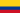
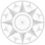
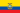
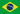
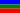
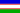
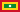
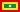
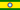
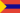

Colombia

Colombia, oficialmente República de Colombia, es un país soberano situado en la región noroccidental de América del Sur, que se constituye en un estado unitario, social y democrático de derecho cuya forma de gobierno es presidencialista. Es una república organizada políticamente en 32 departamentos descentralizados y el Distrito Capital de Bogotá, sede del Gobierno Nacional.[12]
Incluyendo la isla de Malpelo, el cayo Roncador y el banco Serrana, el país abarca una superficie de 1 141 748 km²,[3] por lo que es el vigesimosexto país más grande del mundo y el séptimo más grande de América. Reclama como mar territorial el área hasta las 12 millas náuticas de distancia,[4] manteniendo un diferendo limítrofe al respecto con Venezuela y Nicaragua.[13][14] Limita al Oriente con Venezuela y Brasil, al Sur con Perú y Ecuador y al Noroccidente con Panamá; en cuanto a límites marítimos, colinda con Panamá, Costa Rica, Nicaragua, Honduras, Jamaica, Haití, República Dominicana y Venezuela en el mar Caribe, y con Panamá, Costa Rica y Ecuador en el océano Pacífico.[15]
Es la única nación de América del Sur que tiene costas en el océano Pacífico y acceso al Atlántico a través del mar Caribe,[16] en los que posee diversas islas como el archipiélago de San Andrés, Providencia y Santa Catalina.
Es el vigesimoctavo país más poblado del mundo, con una población de 50.5 millones de habitantes, [5] además es la segunda nación con más hispanohablantes, solo detrás de México.[17] Posee una población multicultural, la cual es, en su mayoría, resultado del mestizaje entre europeos, indígenas y africanos, con minorías de indígenas y afrodescendientes. En el Caribe colombiano hay una cantidad importante de descendientes del Medio Oriente.[18] El producto interno bruto de paridad de poder adquisitivo de Colombia ocupa el cuarto puesto en América Latina y el puesto 28 a nivel mundial. El PIB nominal colombiano es el cuarto más grande de América Latina y ocupa el puesto 28 a nivel mundial.[19]
La presencia humana en Colombia se remonta a más de 10 000 años. Después de miles de años de formación cultural, en el actual territorio colombiano surgieron diversas culturas precolombinas como los muiscas, taironas, quimbayas y zenúes y el Imperio incaico que se extendió hasta el suroeste de Colombia. Al colonizar y esclavizar a estas culturas, España creó el Virreinato de la Nueva Granada con capital en Santafé (hoy Bogotá), aunque durante grandes periodos de tiempo formó parte del Virreinato del Perú. En el año 1810 comenzó la Guerra de independencia, tras la cual surgió el país que actualmente se conoce como Colombia. Durante los siglos XIX y XX, el país se caracterizó por su inestabilidad y un gran número de guerras civiles;[20] el último de estos conflictos conocido como conflicto armado interno, que comenzó en 1960. En el año 2012, después de más cincuenta años de conflicto, el gobierno del entonces presidente Juan Manuel Santos inició conversaciones de paz con las FARC-EP. En 2016 se alcanzó un acuerdo final que a pesar de no ser aprobado en el plebiscito del 2 de octubre del mismo año, fue implementado con modificaciones en 2017. A la fecha, el Gobierno de Colombia se encuentra adelantando el proceso de implementación de los acuerdos e iniciando nuevas conversaciones con el ELN, que ha manifestado la intención de contribuir al final del conflicto.
Colombia tiene una economía diversificada y posee un importante componente de servicios. La producción económica del país está dominada por su demanda interna y el gasto en consumo de los hogares es el mayor componente del PIB.[21] El PIB en 2016 fue de 720 151 millones de dólares.[22] El índice de desarrollo humano colombiano es de 0.747 y su esperanza de vida promedio es de 75.1 años.[7][23] Colombia es parte del grupo de los CIVETS considerados como seis principales mercados emergentes. Es miembro de la OCDE[24], la ONU, la OEA, la Alianza del Pacífico y de otras organizaciones internacionales; también es el único país de América Latina que es socio global de la OTAN. Es el segundo país con mayor índice de desigualdad en América Latina, después de Brasil, y empatado con Panamá, según la base de datos del Banco Mundial.[25]
Es la segunda nación más biodiversa del mundo, contando con 54 871 especies registradas;[26] no obstante, un estudio lo ubica entre los ocho países responsables de la mitad de la destrucción de biodiversidad en el mundo.[27] Por otra parte, es el país de América Latina con más conflictos ecológicos entre la población local y empresas multinacionales en áreas de especial protección ambiental.[28][29] Para proteger su medio ambiente el país cuenta con instrumentos como la Política Nacional de Cambio Climático y el impuesto al carbono.[30]La producción de electricidad en Colombia proviene principalmente de fuentes de energía renovables. 69.97 % se obtiene de la generación hidroeléctrica.[31]
Toponimia
La denominación de Colombia proviene del apellido del explorador genovés del siglo XV Cristóbal Colón (en italiano: Cristoforo Colombo, en latín Christophorus Columbus). Fue adoptado el 15 de febrero de 1819, durante el Congreso de Angostura, para denominar al nuevo Estado que entonces comprendía los territorios de la Nueva Granada, Quito y la Capitanía General de Venezuela.[32] El nombre fue propuesto por Simón Bolívar en la Carta de Jamaica.[33]
En 1830, con la secesión de Venezuela y Ecuador, pasó a llamarse República de la Nueva Granada. Tras la adopción del federalismo con la constitución de 1858 pasó a llamarse Confederación Granadina. En 1863 adoptó el nombre de Estados Unidos de Colombia;[34] los cuales en 1886 se constituyeron en la República de Colombia. En un principio esta denominación fue protestada por los congresos de Ecuador y Venezuela por considerarlo una usurpación unilateral del patrimonio histórico común, pero la discusión fue rápidamente superada.[35]
El origen del nombre también se menciona en la segunda estrofa del himno nacional:
«Se baña en sangre de héroes la tierra de Colón».[36]Rafael Núñez.
Historia
Época precolombina

El estudio de los primeros pobladores del territorio que hoy comprende la Nación se ha dividido en tres etapas de la época precolombina: el paleolítico (15 000-7000 a. C.), el periodo Arcaico Andino (7000 a 2000 a. C.), y el periodo formativo 2000 a. C. hasta el siglo XVI. Los primeros seres humanos que llegaron al territorio datan de aproximadamente 10 mil y 15 mil años. Los cazadores y recolectores nómadas de esta época utilizaban artefactos líticos, herramientas y armas hechas con piedra que datan de 10 450 a. C., hallados en El Abra, donde se comprobó que existían habitantes en la sabana de Bogotá en 10 500 a. C. En el siglo XV existían tres grandes familias que poblaban Colombia. La cultura Caribe se ubicaba en la costa del mar Caribe, la arawak en los ríos Caquetá, Amazonas y Putumayo, y los muiscas en la Sierra Nevada de Santa Marta y el clima frío de los altiplanos del centro del país. Esta última fue la que presentaba más pobladores y un significativo desarrollo en la agricultura, el uso de calendario, los jeroglíficos, y los rituales religiosos.[37][38]
El cacicazgo fue la organización social que primó antes de la Era Cristiana. Se caracterizaba por su orden social basado en una estratificación de la sociedad, las tribus se agrupaban de forma similar a como lo hacía el señorío. Así, el cacique era el que tenía el máximo poder. Se han encontrado evidencias de actividades de esta época en las que se destacan las prácticas funerarias, la evidencia de diversos oficios y símbolos de mando, adornos personales, templos, estatuas, sistemas de riego y notables avances en la agricultura como las terrazas de cultivo, entre otros. Las culturas San Agustín, Tumaco, Tierradentro, Quimbaya, Zenú, Malagana, Pastos, Quillacingas, Guanes y Pijaos, basaron su orden social en el cacicazgo. Muchas de estas ya habían desaparecido o se encontraban reducidas a la llegada de los españoles. Culturas más avanzadas en su orden social surgieron después en el formativo superior, cuya organización superó a la del cacicazgo, pues era similar a federaciones de aldeas; sus mayores representantes fueron culturas como la tairona y los muiscas.[37][38] El Imperio incaico se extendió desde los andes centrales hasta el suroeste de Colombia.
Época hispánica
Conquista española
La primera expedición que zarpó rumbo a lo que hoy es Colombia fue emprendida en 1499 por Alonso de Ojeda acompañado por Juan de la Cosa y Américo Vespucio.[40] Costeó África, pasó por las islas Canarias hasta llegar a lo que hoy se conoce como Guyana y Venezuela, de allí partió hacia Trinidad y después a la Guajira, para regresar a España con un botín compuesto mayoritariamente de indígenas esclavizados. Fue la primera ocasión en la cual exploradores europeos divisaron y mapearon la costa continental americana. Específicamente la costa venezolana y colombiana.[41] En su segundo viaje fundó Santa Cruz en bahía Honda, la primera colonia europea en continente americano, la cual no prosperó.[41]
Un viaje realizado por Rodrigo de Bastidas entre 1500 y 1501 partió desde la Guajira hasta el golfo de Urabá. Durante este recorrido, De Bastidas descubrió la desembocadura del río Magdalena. Por su parte Cristóbal Colón, en su último viaje a América, pudo haber llegado hasta cabo Tiburón, en el Chocó.[39]
En 1508 Ojeda fue nombrado gobernador de Nueva Andalucía, reino que se suponía habría de extenderse desde el istmo de Darién hasta punta de la Vela. Por lo anterior emprendió una tercera expedición partiendo desde Santo Domingo con “dos bajales, dos berantines, y trescientos hombres” entre los que se encontraba Francisco Pizarro.[41] Desembarcó en lo que hoy es la bahía Cartagena de Indias donde leyó el “requerimiento” de sometimiento a los indígenas de Turbaco. Sus fuerzas posteriormente fueron diezmadas por los indígenas por lo cual tuvo que seguir avanzando por la costa del reino que se suponía debía gobernar. Intentó fundar otro asentamiento en el Golfo de Urabá, San Sebastián de Urabá, el cual fue rápidamente abandonado debido a la inclemencia del terreno y a la resistencia de los habitantes del lugar.[41]
En 1510, Vasco Núñez de Balboa fundó Santa María la Antigua del Darién y en 1513 dio con el océano Pacífico, con la ayuda de los indígenas, quienes guiaron al conquistador.[39] El descubrimiento del océano pacífico fue informado a España, y tiempo después llegaron varios navíos para explorar la zona comandados por Pedro Arias Dávila, quien era también el gobernador de la región comprendida entre el cabo de la Vela y Panamá.
En un principio el modus operandi de los españoles fue establecer pequeñas colonias que se dedicaban a subyugar, saquear y esclavizar a los pueblos indígenas aledaños, pero a medida que los indígenas morían en grandes números o huían de la costa, se hizo cada vez más necesario establecer colonias permanentes pobladas por emigrantes peninsulares.[42]
En 1525 sería fundada Santa Marta por Rodrigo de Bastidas y, en 1533, Pedro de Heredia fundó a Cartagena del Poniente. Sin embargo, los esfuerzos de colonización fueron duros y ciudades como Santa Marta se vieron sumidas en la miseria y en su casi total desaparición. En medio de la desesperación, ante el constante estado de guerra con los indígenas y los primeros ataques piratas por parte de corsarios franceses en aquellas costas, el entonces gobernador de Santa Marta Pedro Fernández de Lugo designó a uno de sus hombres de confianza, el licenciado Gonzalo Jiménez de Quesada, para que organizara una expedición que remontara todo el río Magdalena hasta llegar al Perú. La expedición estaba compuesta por más de 600 hombres, un número que sobrepasaba la población de Santa Marta en aquel momento. La expedición partió el 6 de abril de 1536.[43]
La intención de llegar a Perú se basaba en las noticias que habían llegado del fabuloso rescate que los Incas habían pagado para liberar a su líder Atahualpa, lo cual apuntaba a la enorme riqueza de aquellas tierras.[42] El viaje de Jiménez de Quesada fue tortuoso y, para cuando llegó a lo que hoy en día es Bogotá, había perdido al menos dos terceras partes de sus hombres. Allí fundaría dicha ciudad en 1539.
Nuevo Reino de Granada
En 1550 se estableció el Nuevo Reino de Granada, división territorial del Virreinato de Perú, y se estableció la Real Audiencia de Santafé de Bogotá, con lo cual esta ciudad pasó a ser el centro político y administrativo de la Nueva Granada.
Con la consolidación de las colonias españolas tanto en la costa como en el centro del país, se pasó de un sistema basado en concesiones privadas en las cuales la Corona otorgaba gobernaciones a los conquistadores (quienes habían financiado las expediciones por su propia cuenta) a un sistema de gobierno de fuerte carácter centralista en la cual el Rey pretendió gobernar directamente a través del Consejo de Indias.[44] Este periodo se caracterizó por la imposición del poder central desde España sobre los pueblos nativos y los colonizadores de estas tierras. Se impuso un sistema social, económico y político excluyente para gran parte de los involucrados.[39] Se comenzó a desarrollar la institución de la encomienda alrededor de 1549, aunque de manera tardía, ya que esta institución venía en declive en Perú y Nueva España. Con posterioridad crecería en auge la mita como forma de extraer tributos y servicios personales de los indígenas por parte de los colonos.[45]
En 1599 se dio una rebelión de esclavos en Cartagena liderada por Benkos Biohó. Muchas rebeliones similares durante el siglo XVI y XVII fueron estableciendo poblaciones independientes de esclavos libertos, lo cual contribuirá a la formación de las culturas raizales y afrocolombianas.[46]
Virreinato de Nueva Granada
Durante casi todo el periodo colonial Nueva Granada fue una capitanía del Virreinato del Perú. El Capitán de Nueva Granada debía gobernar lo que hoy es Colombia, además de Venezuela con la excepción de Caracas. Cali, Popayán, Nariño y Ecuador estaban bajo la autoridad del Presidente de Quito, quien tenía funciones parecidas a la de una capitanía.[44] Esta organización se mantuvo sin mayor cambio hasta 1717 cuando la capitanía de Nueva Granada fue ascendida a Virreinato. En 1723 los cambios se revirtieron y los territorios regresaron a ser parte del virreinato de Perú, sin embargo, en 1739 el Virreinato de la Nueva Granada se restableció. Las presidencias de Quito y Panamá quedaron adscritas al Virreinato de la Nueva Granada. En 1777 se creó la Capitanía General de Venezuela sobre la cual los virreyes granadinos tenían poco control.
El gobierno subterritorial era adelantado por los cabildos o los concejos municipales. Estos entes no eran de elección democrática pero eran uno de los pocos en los que podían servir los criollos y eran representativo al menos en el sentido que sus miembros eran habitantes del territorio en cuestión.[44]
La zona Caribe fue objetivo de ataques de corsarios al servicio de la Corona británica. Lo anterior culminó en la Guerra del Asiento, durante la cual se dio el sitio de Cartagena de Indias. La derrota de los ingleses ayudó a consolidar el dominio español sobre la Nueva Granada.[47]
Independencia
La independencia comenzó a gestarse a finales del siglo XVIII con la insurrección de los comuneros, la cual fue la primera manifestación de la identidad criolla, al marchar los insurgentes por la capital para protestar contra los nuevos impuestos de los españoles y reclamar su parte de la riqueza nacional.[48]
En 1808 Napoleón obliga al rey Carlos IV y al príncipe heredero Fernando VII a abdicar al trono y ceder la soberanía del imperio español a José de Bonaparte, hermano de Napoleón. Como resultado en Valencia se creó la Junta Suprema de España e Indias, como un reducto del gobierno español en oposición a la súbita invasión francesa. Dicha junta buscaba gobernar el imperio mientras se restauraba a Fernando VII al trono.
El vacío político subsecuente tuvo por resultado una mayor inherencia de los "criollos" (descendientes de españoles nacidos en las colonias) en el gobierno de las provincias.[49]
Con el total colapso de la resistencia española en 1810 las provincias granadinas como Cartagena, Antioquia, Cundinamarca, Venezuela, Panamá y muchas otras a lo largo del contiene comenzaron a conformar sus propias juntas de gobierno siguiendo el ejemplo de las provincias españolas.
Algunas juntas buscaban gobernar provisionalmente mientras se restauraba el Gobierno español pero algunas otras, impulsados por políticos como Antonio Nariño y Camilo Torres, se declararon independientes y republicanas, influidas por la Revolución Americana y francesa e inspirados por filósofos como Rousseau y Bentham.
Entre 1811 y 1816 se instauró el primer estado republicano denominado Provincias Unidas, con algunas provincias como Santa Marta y Popayán permaneciendo leales a la Corona Española y rechazando la Unión.[50] Durante este periodo se dio una guerra civil entre centralistas, federalistas y realistas por lo cual se denomina a esta época la Patria Boba.
Tras la restauración de la Monarquía Española, Fernando VII envió un ejército en 1816 a reconquistar las colonias que se habían declarado independientes. La resistencia a la reconquista fue liderada por Simón Bolívar, quien comandó un ejército independentista desde Guayana y luego desde Venezuela, el cual invadió a Colombia desde los Llanos Orientales con la meta de ocupar la provincia de Tunja, atravesando la cordillera que los separa.[51]
El Ejército Libertador contaba con 1300 hombres de infantería y 800 de caballería, y con el apoyo del gobierno de Inglaterra. Simón Bolívar se encontraría el 12 de junio con las tropas del general Francisco de Paula Santander. El 25 de julio se llevó a cabo la batalla del Pantano de Vargas. El ejército patriota se tomó a Tunja el 4 de agosto. Después, José María Barreiro Manjón, en su retirada hacia Santa Fe, fue sorprendido por Simón Bolívar en el puente de Boyacá, donde ocurrió la batalla homónima el 7 de agosto de 1819. El triunfo de Bolívar significó el fin de la dominación de España.[51]
Guerras civiles y conflicto armado interno
| Transformaciones en la organización política y territorial | |
|---|---|
| Mapa interactivo: cambios en las fronteras de Colombia desde la independencia[52][53] | |
| Provincias Unidas | 1811 - 1816 |
| Gran Colombia | 1819 - 1831 |
| República de la Nueva Granada | 1832 - 1858 |
| Confederación Granadina | 1858 - 1863 |
| Estados Unidos de Colombia | 1863 - 1886 |
| República de Colombia | desde 1886 |
Rivalidades en torno a la forma de gobierno (1828-1886)
Tras el triunfo de Bolívar y la expulsión de los españoles de América se revive el conflicto político entre quienes creían que la nueva nación debía ser de carácter centralista y quienes opinaban que debía ser federal. El inconveniente fue tal que la asamblea constituyente de Ocaña fue incapaz de redactar una constitución para el recién creado estado de la Gran Colombia conformada por los actuales países de Colombia, Ecuador, Panamá y Venezuela. Su nombre oficial era República de Colombia, pero en la historiografía se le hace referencia como Gran Colombia para diferenciarla de la actual Colombia.
Tras el fallido congreso de Ocaña, en 1828 Bolívar expide el Decreto Órganico de la Dictadura declarándose dictador por 2 años hasta 1830. En septiembre de 1828 un grupo de disidentes políticos intentaron asesinar a Bolívar quien se encontraba con Manuela Sáenz en el Palacio de San Carlos. Manuela fue golpeada severamente por los conspiradores pero sobrevivió, mientas que Bolívar se fugó saltando por una ventana, pasando toda la noche escondido debajo del Puente del Carmen, por donde cruzaba el río San Agustín (actual carrera 5ª con calle 6ª) cerca a La Candelaria, tiempo durante el cual adquiere neumonia[54][55]. Como resultado Santander fue acusado de participar en el complot, enjuiciado y exiliado. Estos sucesos, aunados a rumores sobre las gestiones realizadas por miembros del gabinete del Libertador (según Bolívar sin su aprobación) para encontrar un noble europeo que asumiese el rol de Rey Americano al estilo de una monarquía constitucional, culminaron con dos revueltas federalistas encabezadas por dos republicanos, José María Córdova en Antioquia y José María Obando en Cauca. E 16 de octubre de 1829 muere asesinado José María Córdova. Así mismo, el 4 de junio de 1830 muere asesinado el Antonio José de Sucre lo cual, junto con su enfermedad crónica lleva a Bolívar a renunciar en mayo de 1830 para partir hacia el exilio ante el colapso del proyecto de la Gran Colombia. Finalmente fallece ante de poderse embarcar para Inglaterra en Santa Marta en diciembre de 1830. Tras la muerte de Bolívar Santander regresaría al país llegando a ser presidente en 1832[56].
Subsecuentemente fue creada la centralista República de la Nueva Granada (1832-1858), conformada por las actuales Colombia y Panamá y que estaba organizada en provincias. En este periodo los partidarios del centralismo sentarían las bases para la creación del Partido Conservador Colombiano y tomarían a Bolívar como su símbolo, mientras que los federalistas se convertirían en el Partido Liberal Colombiano invocando la memoria de Santander. Luego vino la Confederación Granadina, una república federal integrada por ocho estados federados que reemplazaron a las antiguas antiguas provincias neogranadinas de 1858 a 1863.
En 1854, un golpe político-militar llevó al poder al liberal José María Melo durante algunos meses.[57] Tras ser derrocado en la guerra civil de ese año, se impulsó la reducción del ejército, requisito importante para que funcionara el federalismo instaurado en 1858. Sin embargo, durante la guerra civil de 1860-1862 se dio una rebelión en la que el Estado de Cauca derrocó al gobierno.[58] En 1863 entró en vigor la Constitución de Rionegro con la que el país pasó a llamarse Estados Unidos de Colombia, una república federal en la que primaba la autonomía territorial. Se caracterizó por ser un país influido por el liberalismo que impuso un sistema federal con la creación de ejércitos regionales. En 1876 los conservadores se alzaron en armas en la guerra civil de 1876 pero fueron derrotados por el Gobierno.
Las elecciones presidenciales de 1880 fueron ganadas por el liberal Rafael Núñez quien se opuso al federalismo y apoyó una mayor intervención del estado en la economía y en las regiones. Como resultado, se desató la guerra civil de 1884-1885 en un intento fallido de los liberales radicales para derrocar a Núñez, quien con la ayuda de los conservadores proclamó la Constitución de 1886, que acabó con el federalismo e impuso el centralismo administrativo dándole amplios poderes al Presidente de la República.
De la Regeneración a la República Liberal
La Guerra de los Mil Días se desarrolló entre 1899 y 1902 como reacción al gobierno conservador durante la presidencia de Manuel Antonio Sanclemente y José Manuel Marroquín; la guerra, la posterior quiebra del país y el interés económico de Estados Unidos desató la separación de Panamá en 1903.[59] Finalizada la guerra fue elegido Rafael Reyes (1904-1909) quien disolvió el Congreso en 1905 y lo remplazó por una Asamblea Constituyente que le otorgó poderes dictatoriales.[60] Durante su gobierno se normalizó el orden interno, se estabilizó la economía y se inició un proceso de industrialización y modernización del estado.[61][62] En la década de 1920 se presentan hechos de violencia política (como la Masacre de las Bananeras en 1928), llega la aviación al país y surgen los movimientos populares campesinos, obreros e indígenas[63]. En 1930, por primera vez desde 1886, es decir 34 años después,un liberal ganó las elecciones presidenciales. Con Enrique Olaya Herrera (1930-1934) se inició el periodo en el que los liberales ejercieron el poder durante 16 años continuos.[64] Durante su gobierno se dio la guerra contra Perú, originada en 1932 cuando un grupo de peruanos se tomaron la ciudad de Leticia en el Amazonas.[65] Aunque Colombia fortaleció su flota militar, el conflicto no se solucionó en el campo de batalla sino a través de la vía diplomática por medio del Protocolo de Río de Janeiro (1934) que puso fin al diferendo limítrofe.[66] El primer gobierno de Alfonso López Pumarejo se denominó 'la revolución en marcha' y fue una constante de reformas.[67]
La Violencia y el Frente Nacional
Entre 1946 y 1958, el país estuvo sumido en una crisis social y política, con el recrudecimiento de «La Violencia bipartidista». Se caracterizó por ser un periodo de persecuciones políticas en medio de una guerra entre liberales y conservadores. El conflicto causó entre 113.000 y 300.000 muertos[68] y el desplazamiento forzado de más de dos millones de personas, equivalente a casi una quinta parte de la población total de Colombia, de aproximadamente 11 millones de habitantes.[69] Como consecuencia, el país dejó de ser agrario para convertirse en urbano, pues en 1959 poco más de la mitad de población del país vivía en la ciudad. Históricamente, las tierras en su mayoría agrícolas, fueron adquiridas a bajo precio por terratenientes de la época. La población campesina desplazada de sus tierras se convirtió en una mano de obra agraria asalariada. En esta época la actividad industrial creció, pero esto no se vio reflejado en el desarrollo de la población de ese entonces.[70]
Tras divisiones internas liberales en 1946, los conservadores retomaron el poder presidencial, no las mayorías en el congreso. En 1948, con el asesinato del líder liberal Jorge Eliécer Gaitán, se inició el Bogotazo y el recrudecimiento de la Violencia, guerra civil que perduró hasta principios de los años 1960.[71] Los conservadores mantuvieron la presidencia hasta 1953, cuando la clase política (conformada por las clases altas, que eran los ejercían en la mayoría de los casos los puestos del gobierno) propició un golpe de estado que entregó el poder al General Gustavo Rojas Pinilla. La mayoría de las guerrillas, atraídas por las propuestas de paz del Gobierno, entregaron sus armas, pero varios de sus miembros fueron asesinados posteriormente. Un acuerdo entre los partidos Liberal y Conservador, puso fin a la dictadura de Rojas Pinilla, y tras el Plebiscito de 1957 se creó el Frente Nacional como un regreso a la democracia electoral formal en la cual los partidos políticos alternaron el poder dándole fin a las décadas de guerra entre liberales y conservadores.[72]
El Frente Nacional marcó el fin de la violencia bipartidista que aquejó a Colombia por más de un siglo. Sin embargo continuaron la exclusión de otras ideologías políticas, los problemas sociales, económicos y políticos[73]. Surgieron las guerrillas comunistas: en 1964 Fuerzas Armadas Revolucionarias de Colombia (FARC-EP), el 7 de enero de 1965 el Ejército de Liberación Nacional (ELN), en julio de 1967 el Ejército Popular de Liberación (EPL); la guerrilla nacionalista en enero de 1974: el Movimiento 19 de Abril (M-19), y la primera guerrilla indígena del continente en 1984: el Movimiento Armado Quintín Lame (MAQL).[74][75][76]
Conflicto armado interno (1960-actual) y narcotráfico

Desde 1960 la historia de la nación se ha caracterizado por el conflicto armado interno, con varias etapas de recrudecimiento,la mayor entre 1988 y 2012[78]. Entre el estado contra diferentes actores armados ,(guerrillas de extrema izquierda, paramilitares de extrema derecha, carteles del narcotráfico y crimen organizado) generando según el informe "¡Basta ya!: Colombia: memorias de guerra y dignidad" (2013) 220.000 muertes por el conflicto entre 1958-2012.[79] Para 2020 según el Registro Único de Víctimas se cuentan:8.989.570 víctimas del conflicto en 11.202.790 eventos o hechos victimizantes.[80] Colombia es el país con mayor cantidad de desplazados en el mundo con 7’816.500 de personas que han huido de la violencia según el Centro de Monitoreo de Desplazamiento Interno (IMDC) en 2019[81].
Durante el Frente Nacional fueron elegidos cuatro presidentes, dos por el Partido Liberal y dos por el Partido Conservador. En 1974 se reanudó la contienda electoral entre liberales y conservadores.[82] Aparecen grupos insurgentes como las FARC-EP, el ELN, el EPL y el M-19, que conformaron la Coordinadora Guerrillera Simón Bolívar (CGSB) y grupos paramilitares ( autodefensas regionales, convivir y posteriores AUC) para combatir a estos grupos y a partidos de oposición. Se realizaron negociaciones de paz que culminaron exitosamente en 1990 con el M-19 y en 1991 con el 95% del EPL entre otros grupos. Se promulga la Constitución Política de 1991 que rige los destinos de la nación desde el gobierno de César Gaviria (1990-1994).[83] En los años 1970 se presentó la bonanza marimbera, y desde los años 1980 se dio un auge en el narcotráfico de cocaína. Los narcotraficantes líderes de los carteles de Cali y Medellín adquirieron un enorme poder influyendo en la clase dirigente del país con dinero producto de los negocios ilícitos, como el Proceso 8000 en la campaña electoral del presidente Ernesto Samper(1994-1998), siendo ejemplo de los actuales problemas de corrupción en Colombia. A finales de los 1980 y comienzo de los 1990 el gobierno inició a perseguir y a extraditar a los capos de la droga. Esto desencadenó una oleada de violencia conocida como narcoterrorismo. El dinero del narcotráfico también ayudó a financiar grupos guerrilleros y paramilitares que se enfrascaron en un violento conflicto agudizado en las décadas de los 1990 y 2000.[84][85]
Tras el fracaso de los diálogos de paz del Caguán, el Gobierno de Colombia y los Estados Unidos implementaron el Plan Colombia en el gobierno de Andrés Pastrana (1998-2002).[86]Se establecen los dos periodos presidenciales de Álvaro Uribe (2002-2010) como los años con mayor cantidad de víctimas: 3.633.840 de víctimas según el Registro Único de víctimas.[87] Con la desmovilización de las Autodefensas Unidas de Colombia (AUC) entre 2003 y 2006, las denominadas Bandas Criminales (Bacrim) o Grupos Armados Organizados (GAO) retomaron las actividades ilícitas realizadas por los paramilitares, sobre todo, las relacionadas con el narcotráfico y la minería ilegal.[88][89][90] Desde 2012 hasta 2016, el gobierno de Juan Manuel Santos desarrolló un proceso de paz con la guerrilla de las FARC-EP en La Habana, Cuba, con el objetivo de encontrar una salida política al conflicto. El 2 de octubre de 2016, luego de firmar entre las partes un primer acuerdo de paz el 26 de septiembre de ese año, el gobierno convocó a un plebiscito para refrendar los acuerdos alcanzados con los insurgentes, resultando ganador el NO por estrecho margen a dichos acuerdos.[91][92]Tras un periodo de negociación con los promotores del NO, el gobierno y las FARC-EP acordaron los definitivos acuerdos de paz entre el gobierno de Juan Manuel Santos y las FARC-EP, el cual se firmó el 24 de noviembre 2016.[93] Se presentó un descenso en la intensidad de la guerra[94]
En la actualidad el Estado colombiano no ha cumplido con la mayoría de sus obligaciones, como establecer una presencia integrada en las regiones rurales e implementar programas de restitución de tierras y sustitución de cultivos ilícitos. Colombia encabeza la lista a nivel mundial de líderes sociales asesinados, según el último informe de la organización Front Line Defenders la impunidad en estos casos es del 86%. Según la Organización de las Naciones Unidas el 93 % de los casos ocurrieron en lugares con donde no existe presencia del Estado, lo que genera un gran retroceso para la implementación del Acuerdo de Paz, y el asesinato de excombatientes de las FARC-EP.[95][96][97] El conflicto continúa con la guerrilla del ELN, los Grupos Armados Organizados y las Disidencias de las FARC-EP.[98]
Época contemporánea
Desigualdad
La desigualdad en Colombia se refiere a la desigualdad económica y social existente en el país. Según cifras del Banco Mundial, en el 2017 Colombia fue el segundo país más desigual de América Latina y el séptimo del mundo, del total de 194 países que existen en el planeta. Pese al crecimiento económico sostenido del producto interno bruto que se ubicó entre el 6.6% entre 2006-2014, el índice de desigualdad cayó durante la época de mayor bonanza petrolera [99]
Corrupción
La corrupción ha sido tradicionalmente señalada por muchos analistas como uno de los principales problemas políticos del país. El Índice de Percepción de Corrupción 2016 (IPC), de la agencia para la Transparencia Internacional, – que califica de 0 (Muy Corrupto) a 100 (Muy Transparente) de los niveles de corrupción percibidos por el sector público en 175 países y territorios evaluados– Colombia, en ese estudio obtuvo una calificación de 37 puntos, muy por debajo del promedio global que es de 43 puntos, convirtiendo a Colombia en uno de los países más corruptos del mundo (ver gráfica). Se ubica a Colombia en el puesto 98 a nivel mundial, teniendo como base que Nueva Zelanda y Dinamarca están en el puesto 1 como los países menos corruptos del planeta.[100][101] Se estima que el costo anual de la corrupción en Colombia es de más de 50 billones de pesos; aproximadamente 17 mil millones de dólares anuales, representa el 5 % del PIB y el 21 % del presupuesto nacional. [102][103]
La pandemia de enfermedad por coronavirus de 2019-2020 en Colombia comenzó el 6 de marzo de 2020, según informó el Ministerio de Salud y Protección Social. El primer caso confirmado en el país fue el de una mujer de 19 años, proveniente de Milán, Italia.[104]
Gobierno y política
Colombia es una democracia en la que los ciudadanos les dan poder a los gobernantes mediante el voto para que los representen y tomen las decisiones referentes al país. Los colombianos pueden elegir a sus representantes cuando son mayores de dieciocho años y posean cédula de ciudadanía. En Colombia el hecho de acudir a las urnas no es obligatorio, ya que su sistema electoral es el sufragio voluntario. El voto obligatorio es permitido en la mayoría de países de América Latina. La abstención en el país es una de las más altas de América.[105][106][107][108]
Ramas del poder público
La Constitución Política de 1991 determina todas las normas, derechos y deberes de los colombianos y de las ramas del poder público.[109] La Constitución Política de Colombia ordena el poder público en tres ramas: ejecutiva, legislativa y judicial. De esta manera se busca evitar la concentración del poder. Cada rama cumple diferentes funciones y actúa de forma independiente pero armónica según la constitución.[109]
Rama legislativa: se encarga de crear las leyes, también posee el atributo de modificar las ya existentes. Está representada por el Congreso de la República.[109]
Rama ejecutiva: tiene a su cargo hacer cumplir la Constitución y las leyes. Sus representantes son el presidente, el vicepresidente, los ministros, los gobernantes, los alcaldes y los jefes de los departamentos administrativos.[109]
Rama judicial: se encarga de administrar la justicia y resolver los conflictos de la población colombiana, o entre estos y el Estado. Sus representantes son la Corte Suprema de Justicia, la Corte Constitucional, el Consejo de Estado, el Consejo Superior de la Judicatura, los tribunales y los jueces.[109]
Relaciones exteriores

Las relaciones exteriores son funciones del Presidente de la República como jefe de estado, que son delegadas al Ministerio de Relaciones Exteriores de Colombia o cancillería. La cancillería administra las misiones diplomáticas a otros países y representaciones ante organismos multilaterales.[110] En el siglo XX, Colombia practicó una política exterior de alianza incondicional con Estados Unidos, práctica que fue formulada por el expresidente Marco Fidel Suárez como la doctrina del «respice polum», mira hacia la «Estrella Polar». Dicha política fue complementada en el gobierno de Carlos Lleras Restrepo con la doctrina del «respice similia» o «mira a tus semejantes», con el propósito de diversificar relaciones con los países semejantes, y no solo con un actor privilegiado.[111] Sin embargo, los diferentes gobiernos han combinado ambas estrategias y el país ha participado en la construcción y desarrollo de organismos internacionales.[112]
Colombia se adhirió a la OMC, mediante la Ley 170 de diciembre de 1994 y a partir del primero de abril de 1995, inició sus compromisos como miembro activo de dicha organización. La entrada en vigencia de la OMC y la adhesión a la misma, significó para el país aceptar todos los acuerdos en el ámbito multilateral a excepción de algunas reservas en los acuerdos sobre aeronaves.[113][114]
Fuerzas armadas
Las labores de defensa recaen en el poder ejecutivo con el Presidente de la Nación como Comandante en jefe, quien delega sus funciones al Ministerio de Defensa, contando con las Fuerzas Militares de Colombia y la Policía Nacional de Colombia para labores de defensa y seguridad.[115] Por otra parte, el Departamento Administrativo de Seguridad (DAS) fue la principal agencia de inteligencia de Colombia entre 1960 y octubre de 2011, tenía la autonomía y atributos propios de cualquiera de los ministerios que forman parte del gobierno. Debido a escándalos de interceptación ilegal de llamadas, el DAS quedó disuelto en 2011; en su lugar, se constituyó como nueva agencia de inteligencia del país la Dirección Nacional de Inteligencia (DNI).
De acuerdo a la constitución y la ley, las Fuerzas Militares de Colombia tienen el monopolio de la coacción, y están conformadas por el ejército, la armada y la fuerza aérea, coordinando también las fuerzas de tarea conjunta.[116] Las Fuerzas Militares de Colombia son consideradas como una de las fuerzas armadas mejor preparadas del mundo.[117] Cuentan con un pie de fuerza pública de 885 842 efectivos (en 2019),[118] incluyendo, 20 651 oficiales, 45 588 suboficiales, 16 170 cadetes o alumnos, 214 000 soldados, y 15 407 civiles. Desde septiembre de 1981 el ejército participa en la Fuerza Multinacional de Paz y Observadores (MFO) en Sinaí.[119]
- Ejército Nacional de Colombia. Cuenta con ocho divisiones, así como también unidades especializadas y escuelas de formación.[120] Mantiene un pie de fuerza pública de 214 000 efectivos (en 2018),[121] incluyendo, 9663 oficiales, 32 884 suboficiales, 3644 cadetes o alumnos, 169 428 soldados, y 5 977 civiles, estos últimos típicamente en roles técnicos o profesionales especializados, como Medicina y Sanidad Militar.[122]
- Armada Nacional. Ejerce presencia y soberanía sobre el mar Caribe, el océano Pacífico, las arterias fluviales y diferentes jurisdicciones terrestres con el propósito de mantener la integridad territorial y el orden constitucional. En el año 2012 la Armada Nacional contaba con 34 964 miembros: 20 596 Infantes de Marina, 8748 marineros y suboficiales, 2427 oficiales, 1164 cadetes y alrededor de 2029 civiles, asignados a especialidades técnicas o profesionales.[122]
- Fuerza Aérea de Colombia. Cuenta con seis comandos aéreos de combate (CACOM), un Comando Aéreo de Transporte Militar (CATAM) y un Comando Aéreo de Mantenimiento (CAMAN), que operan en todo el territorio colombiano, además del Grupo Aéreo del Caribe (GACAR).[123] Dispone también de tres centros de formación y entrenamiento: Instituto Militar Aeronáutico CT. José Edmundo Sandoval (IMA), Escuela Militar de Aviación Marco Fidel Suárez (EMAVI) y la Escuela de Suboficiales Capitán Andrés María Díaz Díaz (ESUFA). Este componente de las fuerzas militares cuenta con aproximadamente 14.195 efectivos (2012), incluyendo 2367 oficiales, 3441 suboficiales, 1333 cadetes o alumnos, 4656 soldados (seguridad de bases y Policía Militar, principalmente), y 2598 civiles.[122]
- Policía Nacional. Es la fuerza policial que opera en todo el territorio nacional, cuenta con 165.950 uniformados en 2012 y es la encargada de mantener y garantizar el orden público interno de la Nación. Artículo 2º del Decreto número 1355 de 1970. Regida por la Dirección General DIPON con: (6) direcciones de apoyo al servicio (administrativas), (8) direcciones operativas, (1) dirección de nivel educativo y (5) oficinas asesoras.[124] Desconcentrada en (8) Regionales de policía, (7) Metropolitanas de policía y (34) Departamentos de policía.[122]
Derechos humanos
En materia de derechos humanos, respecto a la pertenencia a los siete organismos de la Carta Internacional de Derechos Humanos, que incluyen al Comité de Derechos Humanos (HRC), Colombia ha firmado o ratificado:
|  Colombia |
Tratados internacionales | ||||||||||||||||
|---|---|---|---|---|---|---|---|---|---|---|---|---|---|---|---|---|---|
| CESCR[126] | CCPR[127] | CERD[128] | CED[129] | CEDAW[130] | CAT[131] | CRC[132] | MWC[133] | CRPD[134] | |||||||||
| CESCR | CESCR-OP | CCPR | CCPR-OP1 | CCPR-OP2-DP | CEDAW | CEDAW-OP | CAT | CAT-OP | CRC | CRC-OP-AC | CRC-OP-SC | CRPD | CRPD-OP | ||||
| Pertenencia | |||||||||||||||||
| Firmado y ratificado, firmado, pero no ratificado, ni firmado ni ratificado, sin información, ha accedido a firmar y ratificar el órgano en cuestión, pero también reconoce la competencia de recibir y procesar comunicaciones individuales por parte de los órganos competentes. | |||||||||||||||||
Organización territorial
| Departamentos de Colombia |
|---|

Según la Constitución de 1991, Colombia está compuesta por 32 departamentos y un Distrito capital.[135] Los gobiernos departamentales se encuentran divididos en tres poderes: La rama ejecutiva, ejercida por el gobernador departamental, elegido cada cuatro años. Cada departamento tiene su propia asamblea departamental, corporación pública de elección popular regional que goza de autonomía administrativa y presupuesto propio.[136] Las asambleas departamentales están conformadas por no menos de 11 diputados ni más de 50, elegidos popularmente para un periodo de 4 años. Las asambleas departamentales emiten ordenanzas de obligatorio cumplimiento en su jurisdicción territorial o departamento.[137]
Los departamentos están conformados por la asociación entre municipios. Actualmente hay 1120 municipios entre los que están el Distrito capital, y los distritos especiales[138] Cada municipio o distrito es presidido por un alcalde, los cuales son elegidos para un período de cuatro años, de acuerdo con el calendario electoral del Consejo Nacional Electoral. En representación de la rama ejecutiva a nivel local, cada municipio elige un Concejo integrado por concejales, elegidos para períodos de cuatro años también.
Los territorios indígenas en Colombia son creados en común acuerdo entre el gobierno y las comunidades indígenas.[139] En casos en que los territorios indígenas abarcan más de un departamento o municipio, los gobiernos locales administran de forma conjunta con los consejos indígenas, en dichos territorios y como está establecido en los artículos 329 y 330 de la constitución de Colombia. Los territorios indígenas pueden llegar a tener carácter de entidad territorial cuando cumplen los requisitos de la ley.[139] Los territorios indígenas cubren un área aproximada de 30 845 231 ha, que se encuentran en mayor parte en los departamentos de Amazonas, Cauca, La Guajira, Guaviare y Vaupés, entre otros.[140]
Geografía
Colombia se encuentra ubicada en América, en el extremo noroccidental de América del Sur. El país es travesado por la cordillera de los Andes y la llanura amazónica, es el único país de América del Sur con costas sobre los océanos Atlántico y Pacífico.[16] Su ubicación latitudinal corresponde a 12º 27´46" norte y 4º 13´ 30" de latitud sur,[141] lo cual corresponde a la zona intertropical. El área total de Colombia es de 2 129 748 km² conformados por el territorio continental y las aguas marítimas.[142] El territorio continental de Colombia es de 1 141 748 km²[3] y el marítimo de 988 000 km², de los cuales 658 000 km² están en el mar Caribe y 330 000 km² en el océano Pacífico donde se encuentran las islas de Gorgona y Malpelo.[143]
Clima
Colombia posee diferentes zonas climáticas. Por debajo de 1000 metros (3281 pies) de altura el clima es cálido (tierra caliente), donde las temperaturas están por encima de 24 °C (75.2 °F). Cerca de 82,5 % de la superficie total del país se encuentra en clima cálido.[144]
La mayoría de la población del país vive en el clima templado (tierra templada, entre 1000 y 2000 metros de altura (3284 pies y 6562 pies), donde las temperaturas varían entre 17 y 24 °C (62.6 y 75.2 °F) y el clima frío (tierra fría, 2000 y 3000 metros de altura (6565 y 9843 pies).[144]
En la "tierra fría" las temperaturas medias oscilan entre los 11 y 17 °C (53.6 y 62.6 °F). Más allá de la tierra fría se encuentran las condiciones alpinas de la zona boscosa y luego las praderas sin árboles de los páramos. Por encima de 4000 metros de altura (13 123 pies), donde las temperaturas son bajo cero, es la tierra helada, una zona de nieves perpetuas y hielo.[144]
- Paisajes bioclimáticos de Colombia
Relieve
El territorio colombiano presenta variedad en su relieve: sistema montañoso central, compuesto por las tres cordilleras andinas, sistema montañoso independiente de los Andes, las llanuras interiores y costeras y los valles interandinos.[145]
- Valles y llanuras: Los valles del Magdalena, del Cauca y del Atrato - San Juan, sobresalen por su extensión entre los diferentes valles interandinos de Colombia. En cuanto a llanuras se destacan, la Llanura del Pacífico, la Llanura Amazónica, la Llanura del Caribe y los Llanos Orientales.[145]
- Sistema montañoso periférico: El sistema montañoso periférico no forma parte de las cordilleras Andinas, forman parte de este sistema la serranía de la Macarena al Este; y los montes de María, la serranía de Piojó o de Pajuancho, la serranía del Darién, la Sierra Nevada de Santa Marta y las montañas de la Guajira al oeste de las Cordilleras Andinas.[145]
- Sistema montañoso central: Está compuesto por la Cordillera Occidental, la Cordillera Central y la Cordillera Oriental. Los Andes colombianos inician en el Nudo de los Pastos. Allí se encuentra los volcanes Galeras, Cumbal y Azufral. En el Nudo de los Pastos se separan las altiplanicies de Túquerres e Ipiales.[145]
Hidrografía
En Colombia hay cuatro vertientes hidrográficas: la Vertiente del Pacífico, la Vertiente del Caribe, la Vertiente del Catatumbo y la Vertiente Atlántica. El Macizo colombiano es de gran importancia para el país, pues allí nacen los ríos Magdalena, Cauca, Patía y Caquetá. En la Sierra Nevada de Santa Marta nacen ríos como el Don Diego, el Ranchería y el Dibulla, los cuales desembocan en el mar Caribe y conforman la vertiente del Caribe. El río Atrato, que forma parte de esta vertiente, es uno de los más caudalosos del mundo con respecto al tamaño de su cuenca.[146]
En un lugar conocido como el Nudo de los Pastos nacen los ríos que conforman la Vertiente del Pacífico. Una característica con respecto a las demás vertientes del Pacífico en América del Sur; el río San Juan es el más caudaloso, y el río Patía es el que mayor longitud. El río Amazonas y el río Orinoco forman la Vertiente Atlántica, la cual posee un área de 670 000 km². Los ríos que conforman el río Orinoco provienen de los Llanos Orientales, su caudal varía según los cambios climáticos. La Vertiente Amazónica se conforma por ríos selváticos caudalosos, debido a la alta pluviosidad de la zona, los cambios en los caudales se deben a las variaciones climáticas. La Vertiente del Catatumbo tiene una extensión de 18 500 km², conformada por el río Catatumbo que desemboca en el lago de Maracaibo en Venezuela. El río Zulia, río Sardinata, río Táchira y río Cucutilla, forman parte de la Vertiente del Catatumbo.[146][147] La ciénagas y lagunas en Colombia se encuentran ubicada en las cordilleras, donde existen llanuras inundables. En el país las ciénagas más extensas se encuentran en la Llanura del Caribe.[147]
|  | Mar Caribe | Océano Atlántico | ||
| Océano Pacífico | Venezuela | |||
|  Ecuador |  Brasil |
Biodiversidad, medio ambiente y regiones naturales
| Regiones naturales de Colombia |
|---|
| Región Amazónica: hace parte de la cuenca del río Amazonas y de la Selva Amazónica. Presenta un alto grado de humedad, pluviosidad.[148] |
| Región Andina: corresponde a los ramales de los Andes incluyendo los valles interandinos de los ríos Cauca y Magdalena.[148] |
| Región Caribe: comprende la Llanura del Caribe y los grupos montañosos que no pertenecen a los Andes.[148] |
| Región Insular: comprende el archipiélago de San Andrés y Providencia en el mar Caribe y las islas de Malpelo y Gorgona en el océano Pacífico.[148] |
| Región Orinoquía: ubicada en el norte de la región oriental, es una zona plana y de baja altitud que forma parte de la cuenca plana del río Orinoco.[148] |
| Región Pacífica: comprende las llanuras costeras del Pacífico y los grupos montañosos de la región que no pertenecen a los Andes. Es una región húmeda y la de la más alta pluviosidad del planeta.[148] |
En Colombia se pueden evidenciar cinco regiones naturales por sus diferentes relieves, ecosistemas y climas.[148] Gracias a los diferentes ecosistemas que se pueden encontrar a lo largo de su territorio,[149] el país tiene el número más grande de especies por unidad de área en el planeta, siendo el segundo país más megadiverso del mundo.[150] Además, Colombia posee aproximadamente el 60% de los páramos existentes en el planeta, y cerca de 31 700 humedales.[151] Cabe anotar que la mayor diversidad de flora y fauna dentro de sus biomas terrestres se halla en las selvas lluviosas, ubicadas en la Región Pacífica, la selva amazónica y el bosque andino.[152]
En 1994 Colombia suscribió la Política Nacional de Biodiversidad que conformó el Sistema Naciónal de Áreas Protegidas que está a cargo 42 Parques Nacionales Naturales, 12 Santuarios de Fauna y Flora, 2 Reservas Nacionales Naturales, 1 Vía Parque y 1 Área Natural Única.[153] Estas áreas son de suma importancia para protección de ecosistemas, la diversidad biológica, y la producción de agua. Se estima que aproximadamente el agua que se produce en estas zonas abastece a 25 millones de personas.[154]
Según un informe del Fondo Mundial para la Naturaleza (WWF), cerca de la mitad de los ecosistemas que existen en Colombia se encuentran en estado crítico o en peligro. Asimismo, de las 1 853 especies de plantas evaluadas, 665 (36 %) se encuentran amenazadas de extinción, mientras que de 284 especies de animales terrestres evaluados, 41 están en peligro crítico, 112 amenazadas y 131 son vulnerables. Según la WWF, la degradación ambiental en Colombia es debido a la extracción de petróleo y minerales.[155] Por otra parte, en 2015 la minería ilegal afectaba a 21 departamentos del país,[156] causando considerables daños ambientales.[157] En cuanto a la deforestación, se estima que 280 mil hectáreas de bosque se talan cada año.
Aunque Colombia no es un gran emisor de gases de efecto invernadero gracias a que cuenta una matriz de generación de energía eléctrica “limpia”, el país ha reiterado su apoyo al acuerdo de París sobre el clima. Esto a pesar de que la producción de electricidad del país proviene principalmente de fuentes de energía renovables. 69.97 % se obtiene de la generación hidroeléctrica.[31] Además el gobierno ha tomado medidas para proteger su medio ambiente como la Política Nacional de Cambio Climático y el impuesto al carbono.[30]
Flora y fauna
Colombia es un país de tamaño intermedio, a pesar de ello posee aproximadamente entre el 10 % o 20 % de especies de plantas a nivel mundial, con entre 45 000 o 55 000 de especies de plantas.[158] Una cifra muy alta para un país de esta proporción; Brasil, un país 6.5 veces más grande que Colombia posee 55 000 y en África, específicamente al sur del Sahara hay cerca de 30 000 especies.[158] Colombia es primera en variedad de orquídeas, posee más de 50 000 especies de flores y alrededor de 50 especies de plantas carnívoras.[159][160]
El país ocupa el tercer lugar en especies vivas y primer lugar en especies de aves con 1 876 especies, esto equivale al 19 % de las especies en el mundo y a 60 % de las especies en Sudamérica. El ave nacional de Colombia es el cóndor de los Andes, que se encuentra representado en el escudo de Colombia. En el país hay 14 especies y 300 familias de mariposas, lo que lo convierte en el segundo país con más variedad de mariposas y con una variedad mayor de 250 000 de coleópteros. A nivel mundial, Colombia es primera en especies de anfibios al poseer el 15 %, el 25 % de cocodrilos entre los cuales destacan el C. acutus y el C. intermedius, el 30 % de tortugas y 222 especies de serpientes. El país se ubica en el cuarto lugar a nivel mundial en mamíferos con 456 especies descubiertas y quinto en especies de primates con 30 especies. En Colombia existen aproximadamente 1 600 especies de agua dulce y 1 200 especies de aguas marinas.
Las aguas colombianas en el mar Caribe poseen gran diversidad de arrecifes de coral, praderas de pastos marinos, manglares, fondos blandos, playas y estuarios que alimentan cientos de especies de fauna y flora.
El Sistema de Información sobre Biodiversidad de Colombia SIBC, basado en la cartilla del Instituto de Investigación de Recursos Biológicos Alexander von Humboldt, estima que el número de especies de aves en el país es de 1 885, con un registro de 197 especies migratorias, sin embargo, que el número de especies conocidas es cambiante, pues se descubren especies nuevas regularmente.[161]
Demografía

La demografía es estudiada por el Departamento Administrativo Nacional de Estadística (DANE). Según los datos del censo nacional de 2018, el país tiene una población de 48 258 494[162] que lo constituye como el cuarto país más poblado en América después de los Estados Unidos, Brasil y México. De ellos, el 51,2 % son mujeres y el 48,8 % son hombres.[163] La mayor parte de la población se encuentra en el centro (región andina) y norte (región Caribe) del país, mientras que al oriente y sur (región de los llanos orientales y amazonía, respectivamente) se encuentran zonas bastante extensas sin poblaciones grandes y generalmente despobladas. Los diez departamentos de tierras bajas del oriente (aproximadamente el 54 % del área total), tienen menos del 3 % de la población y una densidad de menos de una persona por kilómetro cuadrado.[164]
El movimiento de población rural hacia áreas urbanas y la emigración fuera del país han sido significativos. La población urbana aumentó del 28 % de la población total en 1938, al 75 % 2005; sin embargo en términos absolutos la población rural aumentó de 6 a 10 millones en ese período. En cuanto a la emigración, el DANE estima que alrededor de 3 331 107 colombianos viven en el exterior, principalmente en Estados Unidos, España, Venezuela y Canadá. Los más propensos a emigrar son los originarios del interior del país y de algunos centros urbanos, destacándose un contingente importante de intelectuales y talentosos que forman parte del fenómeno llamado fuga de cerebros.[165]
De acuerdo con el Índice de Desarrollo Humano, Colombia se ubicó en el puesto 91 a nivel mundial según el informe de 2012 con un IDH de 0,719. Sin embargo, no todas las regiones de Colombia presentan el mismo nivel de desarrollo. La principal zona de alto desarrollo corresponde a la Región Andina en ciudades como Bogotá, Medellín y Cali, que constituyen el denominado «Triángulo de Oro» y la ciudad de Bucaramanga en la región andina nororiental, la Región Caribe y sus principales ciudades como Barranquilla, Cartagena y Santa Marta constituyen el segundo mayor polo de desarrollo a nivel nacional, destacándose notoriamente por su amplia industria turística y portuaria, así como su amplia diversidad poblacional.[166]
Etnografía
El Censo realizado por el DANE en el 2005 arrojó que 86 % de la población no se considera parte de una minoría étnica, cifra dividida en 49 % de Mestizos y 37 % de Blancos,[18] un 10.6 % de afrocolombianos[169] que representan la cuarta población negra más grande de América, después de los Estados Unidos, Brasil, Ecuador y Haití. Los indígenas conforman el 3.4 % de la población nacional y los gitanos el 0.01 %.[169] La diversidad étnica en Colombia es el resultado de la mezcla entre españoles, amerindios y afrodescendientes. Los pocos pueblos indígenas que quedan en el país, son comúnmente olvidados y sus costumbres lentamente se van desapareciendo.[170] Estudios genéticos entregan proporciones que promedian entre un 44,0% a un 65,0% de aporte europeo,[171][172] un 22,0% a un 39,0% de aporte amerindio,[172][173] y de un 8,1% a un 20,3% de aporte africano.[174][175]
Inmigración
Colombia es el país con la mayor población inmigrante de origen venezolano en el mundo, contando en 2019 con 1 626 000 personas.[176] Entre los inmigrantes, que no fueron muchos en comparación con otros países latinoamericanos más abiertos a la migración (como Argentina, Brasil o México), los grupos mayores son los provenientes de España,[177] Estados Unidos, Reino Unido, Países Bajos y Alemania, así como judíos y gitanos. A finales del siglo XIX, Barranquilla recibió una gran cantidad de inmigrantes europeos y del Medio Oriente (Líbano, Siria y Turquía), así como estadounidenses, cubanos y chinos, entre otros, que se dispersaron por toda la geografía nacional. Aunque una gran parte de la migración de Medio Oriente era cristiana (esto, debido a las políticas migratorias colombianas de principios del siglo XX), en Maicao (Guajira), se encuentra la comunidad árabe y musulmana más numerosa de Colombia. Descendientes de los inmigrantes árabes también tienen fuerte presencia en el departamento de Córdoba, en Barranquilla, en Valledupar, en Bogotá y en el Valle del Cauca. Inmigrantes de otros países latinoamericanos como Brasil, Chile, Ecuador, Argentina, Perú y las Antillas, entre otros, también tienen presencia, aunque mínima en Colombia,[178] sin embargo existe en la actualidad una tendencia migratoria importante de venezolanos en el país, principalmente por la situación económica y de inseguridad en su país.[179][180][181]
Principales ciudades
| Principales ciudades de Colombia | ||||||||||||
|---|---|---|---|---|---|---|---|---|---|---|---|---|
| Ciudad | Departamento | Población | Ciudad | Departamento | Población | |||||||
| 1 | Bogotá | Cundinamarca | 7 715 778 | 11 |  | Villavicencio | Meta | 502 047 | ||||
| 2 | Medellín | Antioquia | 2 490 164 | 12 | Ibagué | Tolima | 501 991 | |||||
| 3 |  | Cali | Valle del Cauca | 2 205 680 | 13 | Santa Marta | Magdalena | 484 025 | ||||
| 4 |  | Barranquilla | Atlántico | 1 273 646 | 14 | Valledupar | Cesar | 468 165 | ||||
| 5 |  | Cartagena de Indias | Bolívar | 914 552 | 15 | Manizales | Caldas | 420 933 | ||||
| 6 | Soacha | Cundinamarca | 749 034 | 16 | Pereira | Risaralda | 399 283 | |||||
| 7 | Cúcuta | Norte de Santander | 748 948 | 17 | Montería | Córdoba | 395 184 | |||||
| 8 | Soledad | Atlántico | 664 141 | 18 | Neiva | Huila | 340 512 | |||||
| 9 |  | Bucaramanga | Santander | 597 316 | 19 |  | Pasto | Nariño | 305 360 | |||
| 10 | Bello | Antioquia | 536 427 | 20 | Armenia | Quindío | 297 052 | |||||
| Proyección 2020 - DANE | ||||||||||||
Aproximadamente el 75 % de la población vive en zonas urbanas, un porcentaje por encima de la media mundial que en 2010 se ubicó en el 51.3 % según las Naciones Unidas. Bogotá es la ciudad más poblada y el principal centro económico del país. Colombia presenta grandes aglomeraciones urbanas a lo largo de su territorio, Medellín y Cali poseen una población de más de dos millones de habitantes y Barranquilla de más de un millón. Otras veinticinco ciudades superan los doscientos mil habitantes.[165][182][183]
Educación
El sistema educativo colombiano está regulado por el Estado a través del Ministerio de Educación de Colombia. El sistema educativo se divide en preescolar (para aquellos que tienen menos de seis años), educación básica (duración de nueve años comprende la primaria y la secundaria), educación media (duración de dos años, comprende los grados décimo y undécimo), y educación superior (universidad). La educación básica y media es evaluada por medio de los exámenes nacionales denominados Pruebas Saber (ICFES) en los grados 3°, 5°, 9° y 11°.[184]
La educación superior se imparte en dos niveles: pregrado y posgrado. El nivel de pregrado tiene, a su vez, tres niveles de formación: nivel técnico profesional (relativo a programas técnicos profesionales), nivel tecnológico (relativo a programas tecnológicos), nivel profesional (relativo a programas profesionales universitarios). En el nivel de postgrado se reconocen las especializaciones, las maestrías y los doctorados.[184] La educación superior es evaluada mediante la Pruebas Saber (ICFES): las Pruebas Saber TyT evalúan las competencias genéricas y las competencias específicas comunes de los estudiantes de programas técnicos y tecnólogos que hayan aprobado el 75% de los créditos académicos.[185] Las Pruebas Saber Pro es un examen que comprueba las competencias de los estudiantes que cursan el último año de los programas académicos de pregrado en las instituciones de Educación Superior (universidades). [186] [184]
El ICETEX es un organismo estatal de financiación para acceder a la educación superior mediante el «otorgamiento de créditos educativos y su recaudo, con recursos propios o de terceros, a la población con menores posibilidades económicas y buen rendimiento académico».[187]
La Universidad Nacional de Colombia es la mayor universidad de la nación, con cerca de 53 879 alumnos. Las universidades normalmente se dividen en facultades.[188] Por otra parte, el Servicio Nacional de Aprendizaje (SENA) es una entidad que ofrece formación gratuita con programas técnicos, tecnológicos y complementarios.[189]
La tasa de alfabetización total de adultos era en 2016 de aproximadamente el 94,65 %, siendo la tasa en hombres del 94,4 % y de mujeres en 94,89 %.[190] Colombia ocupó el puesto 59 entre 72 naciones evaluadas en las pruebas PISA de 2015.[191]
Salud

Colombia es la nación con la Asistencia sanitaria universal más alta de América Latina, superando el 95% de su población en el año 2019.[193]Según la OMS, Colombia ocupa el puesto 22 a nivel mundial entre 191 países en cuanto al funcionamiento general de su sistema de salud.[194] El sistema de salud colombiano se caracteriza por estar formado por dos sistemas coexistentes: el régimen contributivo (privado) y el régimen subsidiado (gratuito) por medio del Sisbén. Ambos regímenes proporcionan cobertura universal, acceso por igual a medicamentos, procedimientos quirúrgicos, servicios médicos y odontológicos.[195]
El Ministerio de Salud y Protección Social es el responsable de desarrollar políticas en materia de salud, así como el encargado de regular la salud en el país. La entidad promotora de salud (EPS) son empresas regionales de sanidad que se encargan de implementar los objetivos fijados por el Ministerio de Salud, de desarrollar las líneas maestras y sus protocolos, y también de supervisar la actuación de los cuidados en salud. Para cumplir con sus responsabilidades las EPS deben conformar una red de servicios para lo cual cualquier entidad promotora de salud puede contratar a clínicas, hospitales o un instituto prestador de salud (IPS) de forma independiente y autónoma o pueden garantizar el acceso a los servicios con su propia red. Además deben contratar un porcentaje determinado mínimo con instituciones prestadoras de servicios públicos.[195]
El sistema de salud colombiano es descentralizado, las fuentes de financiación de la salud son principalmente del Sistema General de Participaciones (SGP), los aportes de empleadores y trabajadores al régimen contributivo que se administran por la Administradora de los Recursos del Sistema General de Seguridad Social en Salud (ADRES),[196] y los recursos obtenidos en los juegos de suerte y azar administrados por Coljuegos, también existen otras fuentes de financiación de menor envergadura.[197]
La mayoría de los colombianos muere por enfermedades crónicas. La principal causa de defunción son las enfermedades isquémicas del corazón (infartos) en el 16,3 % de las muertes, seguido por las enfermedades cerebrovasculares, la tercera causa son las enfermedades pulmonares debido al consumo de cigarrillo.[198]
La tasa de mortalidad infantil de Colombia es de 14,8 entre 100 nacidos vivos en 2017.[199]
Ciencia y tecnología
La ciencia y la tecnología en Colombia se comenzó a proyectar de manera de importante a principios del siglo XX, época en la cual se comenzó con pequeñas invenciones propias del país, aunque mucho antes, ya habían entrado grandes creaciones de otros lugares del mundo. Colombia es reconocida a nivel mundial, por su calidad en la medicina, específicamente la medicina estética, lo que la posicionado como una potencia en turismo de salud.[200][201][200][202][203] Entre los médicos más reconocidos en Colombia están el neurofisiólogo Rodolfo Llinás quien ha aportado en la busca de la cura contra la enfermedad de Alzheimer[204] y quién enunció la Ley de Llinás, y también el inmunólogo Manuel Elkin Patarroyo, el cual descubrió la primera vacuna sintética contra la malaria.[205]
Otros grandes inventos relacionados con la medicina se han producido en el país, tales como el marcapasos, creado por el ingeniero electrónico Jorge Reynolds el cual ha sido de gran importancia para quienes sufren de insuficiencia cardiaca. De la misma manera fueron inventados en Colombia, el LASIK, una de las técnicas más utilizadas para la corrección de las ametropías esferocilindricas con láser en el mundo, la Válvula de Hakim, entre otros que no solo han aportado a la medicina nacional, sino a nivel mundial.[206] En febrero de 2013, Colombia fue es el primer país de América Latina en practicar una cirugía robótica en urología pediátrica, en el mundo solo se han realizado 10 procedimientos de este tipo.[207][208]
La problemática que ha vivido la nación frente a la violencia, le ha permitido innovar en tecnología militar o de guerra, para su ejército e incluso para otros ejércitos del mundo. Uno de los inventos más llamativos fue el robot ‘Arcadio’, que está diseñado para detectar artefactos explosivos bajo tierra y desactivarlos, tales como las mina antipersona.[209][210] También se han creado por primera vez en el país aviones, específicamente de entrenamiento[211] y otros materiales como por el ejemplo, el cartucho de seguridad, con el fin de disminuir los índices de muertes y heridas a causa de disparos accidentales.[212][213][214]
Colombia es uno de los ocho países latinoamericanos en tener objetos en órbita. El 7 de abril de 2007, el picosatélite Libertad I (diseñado por la Universidad Sergio Arboleda de Bogotá) fue puesto en órbita en uno de los lanzamientos hechos desde el Cosmódromo de Baikonur. El Libertad I órbita alrededor del planeta y según proyecciones seguirá haciéndolo por 5 o 6 años. En 1955 Colombia firmó un tratado con Estados Unidos para el desarrollo de energía nuclear con fines pacíficos y en 1960 es admitida en el Organismo Internacional de Energía Atómica. Colombia es uno de los pocos países latinoamericanos en tener un reactor nuclear en operación, el IAN-R1, fabricado en Estados Unidos, su función es la producción de neutrones con fines de investigación.[215]
En los últimos años el país ha decidido implementar nuevas maneras de innovar en tecnología siendo asesorada por países como Estados Unidos, Rusia, Corea del Sur, entre otros, pues se estima que Colombia solo utiliza el menos del 0,10 % del PIB nacional, para el sector de la ciencia, y la tecnología, y el 0,19 % del PIB en investigación y desarrollo, justamente por necesidad de invertir más dinero en el sector de defensa y seguridad.[216] En el año 2006 se aprobó la Ley de Ciencia, Tecnología e Innovación, con el fin de crear empresas e industrias con base en la tecnología.[217]
Economía
Colombia es una economía emergente y una potencia económica de la región.[219][220] También forma parte del bloque de países emergentes CIVETS, de la Organización Mundial del Comercio (OMC) y de la Organización para la Cooperación y el Desarrollo Económicos (OCDE). Su PBI PPA ocupa el cuarto puesto en América Latina detrás de Argentina, México y Brasil, además de ser el 28 a nivel global. El PBI nominal colombiano es el cuarto más alto de América Latina después de los de Brasil, México y Argentina, y ocupa el puesto 29 a nivel mundial. El sector financiero en la nación ha crecido un 6.7 % entre el 2005-2010, debido a la liquidez favorable de la economía colombiana.[221] En 2012 el sector de servicios representó el 55.1 % del PIB de Colombia, mientras que 68 % de 23.08 millones de colombianos formaron parte de la fuerza laboral en este sector.[222]
La economía de Colombia ha experimentado un crecimiento promedio anual de 5.5 % desde 2002.[223] En el 2012, 23.8 millones de colombianos sirvieron como fuerza laboral en la economía, con un ingreso promedio de US$10 700, produciendo US$500 000 millones para el Producto Interno Bruto (PIB) del país. Sin embargo, la desigualdad en la distribución de riqueza mantiene a un 29.3 % (2014) de colombianos viviendo por debajo de la línea de pobreza nacional,[224] a lo que se suma el deficiente sistema pensional. Desde 2011 desempleo ha marcado un dígito, (9.2 % en noviembre de 2011)[225] y el subempleo un 32.7 % (noviembre de 2011).
El Ministerio de Hacienda y Crédito Público define, formula y ejecuta la política económica del país. La moneda nacional es el peso colombiano. El Banco de la República es un organismo independiente que controla la cantidad de dinero y control cambiario de divisas que circula en la economía para evitar recesiones y desempleo a causa de la inflación, además de controlar el crédito interbancario. Juntos, el MHCP y el BRC regulan el funcionamiento de la economía a nivel nacional con el apoyo del Ministerio de Comercio, Industria y Turismo (MCIT).[226][227] El sector empresarial de Colombia se encuentra agremiado en la Asociación Nacional de Industriales (ANDI) que trata de mantener grupos de empresas del mismo sector económico para que actúen en común acuerdo para el desarrollo.[228]
Agricultura y ganadería
La agricultura es regulada por el Ministerio de Agricultura y Desarrollo Rural, que planea el desarrollo de la agricultura y la pesca en compañía del Ministerio de Hacienda y Crédito Público para el desarrollo económico del país y el sostenimiento de la población.[229] La agricultura se caracteriza por los cultivos tecnificados por región de caña de azúcar, café, flores, algodón, plátano, banano, sorgo, maíz, arroz, palma africana, papa, yuca, entre otros. Por la gran variedad de climas y terrenos, Colombia presenta una gran variedad de especies de fauna y flora para el consumo o utilización por parte de humanos.[230] Los agricultores colombianos se encuentran agremiados en la Sociedad de Agricultores de Colombia (SAC).[231]
El café de Colombia es una indicación geográfica protegida, por la Unión Europea desde el 27 de septiembre de 2007.[232] Dicha denominación se le otorga al café 100 % arábigo (coffea arabica) producido en las regiones cafeteras de Colombia, delimitadas entre la latitud Norte 1° a 11°15, longitud Oeste 72° a 78° y rangos específicos de altitud que pueden superar los 2.000 metros sobre el nivel del mar. El término café de Colombia, también es una marca de certificación registrada en Estados Unidos el 7 de julio de 1981,[233] y en Canadá el 6 de julio de 1990.[234] Así mismo, está reconocido como Denominación de Origen Protegida en otros países del mundo,[235] como Ecuador,[236] Bolivia[237] y Perú.[238] A nivel mundial, Colombia es el cuarto país productor de café[239] y el mayor productor de café suave en el mundo.[240] Los principales países importadores del café de Colombia son Estados Unidos, Alemania, Japón, Países Bajos y Suecia.
Por su parte la ganadería adquirió importancia desde mediados del siglo XIX, en que se introdujeron al país los primeros ejemplares de ganado Durham. A medida que avanzó el siglo de la ganadería se consolidó como el segundo renglón de importancia en la economía y dio origen a una amplia industria lechera.[241] El país cuenta con el hato ganadero más grande de América Latina con un inventario bovino de 26,9 millones de cabezas en 2008.[242] El Brahman colombiano, ideal para la producción de carne en condiciones tropicales, se destaca por tener una genética de alta calidad en el mundo.[242]
Industria, construcción, minería y energía

El sector industrial ha tenido un crecimiento sostenidos en los últimos años. En el año 2000 la producción en manufacturera era de US$29,240 millones, en 2010 alcanzó aproximadamente US$80,000 millones. Se destaca en este periodo la producción de bienes de media y alta tecnología, que paso del 31.7 % en el año 2000 al 34.6 % en el 2010. La apertura económica a los mercados extranjeros han favorecido las exportaciones de productos de alta y media tecnología. Estos pasaron de $US 2, 251 millones a US$ 4,868 en 2010, lo cual representa el 35 % de las exportaciones de la industria.[244]
Por otra parte, el sector de la construcción en Colombia tuvo un crecimiento aproximado del 7.9 % en la primera década. En contraste con el PIB de la economía colombiana que tuvo un crecimiento del 5.9 % en 2011.[245] En la primera mitad de la década del año 2000 las edificaciones tuvieron un crecimiento del 8.3 %. En los años 2009, 2010 y para el 2011 se registró un crecimiento de 6.2 % en los tres primeros meses de este año. Las obras civiles han crecido durante la primera década, a un promedio de 8.0 %, se asocia este crecimiento a las necesidades que posee el país en infraestructura.[246]
Uno de los sectores de mayor crecimiento ha sido el sector minero-energético, el cual se conforma por los subsectores de la minería, el petróleo, el gas y la energía. En la última década este sector pasó de US$ 8300 millones en 2000, a más de US$ 40 000 millones en 2011.[247] El sector petrolero en Colombia ha tenido un crecimiento del 3.4 % en la última década. En los últimos años la actividad exploratoria ha aumentado, en el año 2008 fue del 15.4 %, en 2009 fue del 15.4 %; 2010 16.9 % y a los tres primeros meses de 2011 un crecimiento del 17.7 %. En este periodo ha habido un fortalecimiento de la Agencia Nacional de Hidrocarburos. En cuanto al sector energético registra un crecimiento del 3.0. El sector de minas y canteras ha tenido un crecimiento del 6.5 %. El aporte al PIB de la producción de minería, petróleo y energía eléctrica equivaldría al 12.5 % del PIB total. Pero el peso de diferentes subsectores es diferente. El sector petrolero aporta el 7.1 % al PIB total, el minero un 2.7 %, el eléctrico 2.3 % y la producción de gas un 0.5 %.[247]
El sector eléctrico está mayormente dominado por generación de energía hidráulica (67 % de la producción) y generación térmica (27.4 %) en 2010, la generación de energía eléctrica en este año fue de 56 877.6 GWH. No obstante, el potencial del país en nuevas tecnologías de energía renovable (principalmente eólica, solar y biomasa) apenas si ha sido explorado. El país tiene importantes recursos de pequeña hidráulica, eólica, y solar que permanecen en gran parte sin explotar. De acuerdo con un estudio del Programa de Asistencia en Gestión del Sector Energético del Banco Mundial, la explotación del gran potencial eólico del país podría cubrir más de la totalidad de sus necesidades actuales de energía. El 80 % de la capacidad instalada en Colombia para producción de electricidad proviene de energías renovables.[248][249][250]
En cuanto a minería, los minerales más explotados son el oro, la plata, esmeraldas, platino, cobre, níquel, carbón. Uno de las extracciones más importantes es la mina de carbón del Cerrejón en La Guajira, que es la mina de carbón a cielo abierto más grande de América Latina.[251] La explotación de oro y cobre datan de la época precolombina y se desarrolló en la zona andina del país, con grupos étnicos como los Muiscas, los Quimbaya, los Tayrona y los Zénues, los cuales todavía son muy explotados artesanalmente, existiendo gran cantidad de ilegalidad,[252] y desde hace algunos años multinacionales han comenzado a hacer parte de este negocio. A nivel mundial es el principal productor de esmeraldas, concentrándose su explotación en el interior del país, en departamentos como Boyacá y Cundinamarca.[253][254] Por su parte, el petróleo es explotado en su mayoría por Ecopetrol. En Barrancabermeja se encuentra la refinería de petróleo más grandes del país.[255][256]
Comercio exterior
En 2012, la agricultura en Colombia aportó un 6.8 % al PIB nacional y el 18 % de la fuerza laboral se dedicó a la agricultura, ganadería y pesca.[222] Sin embargo, el principal producto de exportación de Colombia es el petróleo, cuyas reservas estimadas son 2.377 millones de barriles en 2012,[257] las cuales son desarrolladas por Ecopetrol, en marzo de 2013 se produjo 1 013 481 barriles de petróleo por día.[258]
Así mismo se destaca la industria textil,[259] alimenticia,[222] automotriz[260] y la petroquímica.[261] También, el procesamiento de alimentos, la producción de café, aceite, bebidas, cemento, oro, carbón, esmeraldas, níquel, flores cortadas, bananas, entre otros.[222] Las exportaciones de Colombia ascendieron a US$ 59.96 mil millones en 2012,[222] El sector del comercio exterior comprendido por las importaciones y exportaciones del país, ha tenido un crecimiento mayor al 30 % en el año 2011. En los últimos años el país ha firmado diferentes acuerdos comerciales con otros países, varios de ellos actualmente vigentes.[262]
Turismo
La presencia de turistas pasó de medio millón en 2003 a 1.3 millones en
2007, lo que le significó a Colombia varios reconocimientos
internacionales. En 2006, una de las mejores editoras de guías de viaje
en el mundo, Lonely Planet,
escogió a Colombia como uno de sus destinos top 10 mundiales de 2006.
Las mejoras en la seguridad del país fueron reconocidos en noviembre de 2008 con una revisión de los consejos de viajes sobre Colombia emitidos por la Oficina de Relaciones Exteriores británica. En el 2013 ingresaron en el país 3 747 945 turistas,[263] la mayoría provenientes de países América y Europa.[264] Por su parte, el turismo interno tuvo un incremento del 10.3 % en 2012 con respecto a 2011.[265][266]
Entre los lugares de interés turístico están el histórico barrio de la Candelaria en Bogotá, la ciudad amurallada y las playas de Cartagena de Indias, las islas del Rosario, las playas y el centro histórico de Santa Marta, el Parque nacional Tayrona, el desierto y las playas de la Guajira, las ciudades coloniales de Santa Fe de Antioquia, Popayán, Tunja, Villa de Leyva y Santa Cruz de Mompox (especialmente durante Semana Santa), la catedral de Las Lajas en Nariño y la catedral de Sal de Zipaquirá. Los turistas visitan el país durante numerosos festivales, ferias y carnavales como la Feria de las Flores en Medellín, el Festival Nacional del Folclor de Ibague, el Carnaval de Barranquilla, la Feria de Cali, la Feria de Manizales, el Carnaval de Negros y Blancos de Pasto, el Festival de la Leyenda Vallenata de Valledupar, las Fiestas del 20 de enero de Sincelejo, las Fiestas del Mar de Santa Marta, el Festival Iberoamericano de Teatro de Bogotá, el Reinado Nacional de la Belleza en Cartagena, entre otros.
La gran variedad de la geografía, la flora y la fauna de Colombia ha dado lugar al desarrollo de una industria ecoturística que se concentra en los parques nacionales del país. Dentro de los destinos ecoturísticos más importantes están el parque Tayrona y el Cabo de la Vela en la península de La Guajira (en la costa del Caribe), el volcán Nevado del Ruiz, el cañón del Chicamocha y el desierto de la Tatacoa (en la Región Andina), el parque nacional Amacayacu en la cuenca del río Amazonas, y las islas de Malpelo y Gorgona en el Pacífico. Colombia cuenta con siete sitios declarados Patrimonio de la Humanidad por la Unesco.
Infraestructura
Colombia presenta un atraso en infraestructura vial, petrolera, minera y tecnológica. Existen deficiencias o carencias en puentes, aeropuertos, puertos marítimos, transporte fluvial y ferrovías.[269] En respuesta a esta situación y ante el crecimiento económico y la apertura comercial, se han hecho esfuerzos por mejorar la infraestructura del país, aumentando la inversión en grandes proyectos. Cabe destacar, entre ellos, la Ruta del Sol, autopista que optimizará la conexión entre el centro del país y la costa Caribe;[270] la Troncal Bogotá-Buenaventura,[271] que incluye el túnel vehicular más largo de América[272] y permitirá conectar la capital con el principal puerto sobre el Pacífico; y la Transversal de Las Américas,[273] en la costa Caribe, entre otras grandes obras. Colombia es el país de la región que más invierte en infraestructura, solo superado por Brasil.[274]
El gobierno delega a proveedores los servicios de acueducto y alcantarillado. La infraestructura en acueducto en Colombia cubre el 93 % del país, mientras que la cobertura en alcantarillado el 86 %,[275] con una continuidad promedio de 86 % registrada en el 2003.[276] El promedio de uso de agua urbano (l/c/d) en el año 2006 fue de 59 % según la SSPD, consumiéndose 1188 millones de metros cúbicos, de los cuales el 80 % se usó para consumo doméstico.[277] En 2006 la tarifa de agua y alcantarillado urbano promedio fue de US$11,40 al mes.[277] La porción del porcentaje de agua residual recogido y tratado fue de 25 %,[277] mientras que la inversión anual en agua y saneamiento fue de US$10 per capita. El porcentaje de autofinanciamiento por parte de las empresas de servicio público fue del 26 %.[278]
Carreteras
El transporte en Colombia es regulado dentro de las funciones del Ministerio de Transporte y entidades como el Instituto Nacional de Vías (INVÍAS) encargada de la Red Nacional de Vías (13 000 km),[279] la Aerocivil, encargada del transporte aéreo civil y de los aeropuertos,[280] la Dirección General Marítima (DIMAR),[281] entre otras y bajo la vigilancia de la Superintendencia de Puertos y Transporte.[282]
Sistema portuario
El sistema portuario colombiano, privatizado en la década de 1990, está conformado por aproximadamente 122 instalaciones. Existen las sociedades portuarias regionales de Buenaventura (principal puerto marítimo de Colombia), Barranquilla, Tumaco, Cartagena y Santa Marta. Hay otras nueve sociedades portuarias para servicio público, siete sociedades portuarias privadas, cuarenta y cuatro muelles homologados y diez embarcaderos para pequeñas embarcaciones, entre otras menores.[284]
Transporte urbano
Los sistemas urbanos de transporte masivo se desarrollaron primero en Medellín, Bogotá y Pereira. La congestión de tránsito en Bogotá se ha agravado por la falta de transporte ferroviario. Sin embargo, este problema se ha aliviado parcialmente por el desarrollo de TransMilenio desde el año 2000 y un sistema de restricción de vehículos basado en el número de las placas llamado Pico y Placa [cita requerida]. Desde 1995, Medellín, fue la primera ciudad del país en tener sistema de transporte masivo, además de ser la única que cuenta con un ferrocarril urbano conocido como el Metro de Medellín, que conecta la mayoría de su área metropolitana. Un sistema de teleférico alto, Metrocable, se añadió en 2004 para vincular algunos de los barrios más pobres de las montañas de Medellín con el Metro. A finales de 2011, un sistema de buses articulados, llamado Metroplús comenzó a operar en Medellín. Un sistema de buses de tránsito rápido llamado Transmetro, similar al TransMilenio en Bogotá, comenzó a funcionar en julio de 2010 en Barranquilla. Además de estas ciudades, el tercer sistema integrado de transporte masivo del país, lo ejecutó una ciudad intermedia, Pereira, con Megabús, desde 2006 y actualmente se encuentra en construcción la línea más larga de cable aéreo de transporte masivo de pasajeros Megacable, Bucaramanga (Metrolínea, desde 2009), Cali (Masivo Integrado de Occidente) y Cartagena (Transcaribe, desde 2015).
Aeropuertos
El sistema aeroportuario colombiano cuenta con alrededor de 1101 aeropuertos y aeródromos entre públicos y privados, de los cuales trece son internacionales. El principal terminal aéreo del país es el El Dorado de Bogotá, que con alrededor de 20 millones de pasajeros transportados al año es uno de los aeropuertos de mayor dinámica en América Latina. En la actualidad está en proceso de ampliación y modernización para adaptarlo a las nuevas exigencias de demanda. El país está próximo a contar con aeropuertos internacionales más aptos para el servicio de pasajeros del siglo actual, con la modernización de múltiples terminales de pasajeros, mejoramientos y ampliaciones de pista, como las presentadas en los Aeropuerto Internacional Matecaña de la principal ciudad del Eje Cafetero, Pereira, Aeropuerto Internacional José María Córdoba de Rionegro, Aeropuerto Internacional El Edén de Armenia, Aeropuerto Internacional Alfonso Bonilla Aragón de Cali, así como del principal aeródromo de la región Aeropuerto Internacional El Dorado de Bogotá, entre otros. Además, se espera que el aeropuerto Antonio Nariño de Pasto y El Caraño de Quibdó, Chocó se conviertan en aeródromos internacionales.
Medios de comunicación
Telecomunicaciones
Las comunicaciones en Colombia son reguladas dentro de las funciones del Ministerio de Tecnologías de la Información y las Comunicaciones de Colombia y la Comisión de Regulación de Comunicaciones (CRC). En 2009 se reportaron 6.8 millones[286] de líneas de telefonía fija y en 2011 47.8 millones[287] de abonados a telefonía móvil, lo que equivale a una cobertura del 103 % de la población. El código de dominio de nivel superior geográfico en Internet (ccTLD) para Colombia es .co; este fue administrado por la Universidad de los Andes desde 1991 hasta el 2004, cuando el consejo de estado determinó que el encargado del dominio colombiano debía ser el Ministerio de Comunicaciones. En septiembre de 2009 fue otorgado un contrato de concesión a.CO Internet S.A.S, con el fin de administrar dicho dominio. En 2011 el número de usuarios de Internet fue de 25 millones, con una tasa de penetración del 56 % [288] sobre la población total, la tercera más alta de América Latina; así mismo, el número de suscriptores de banda ancha llegó a 2.3 millones, con tasa de penetración de 5.1 %.
Prensa
El diario de mayor circulación nacional es El Tiempo, de la Casa Editorial El Tiempo (CEET).[289] El segundo en importancia es El Espectador. También están El Espacio, La República, Portafolio y El Nuevo Siglo. Entre los diarios regionales se destacan El Colombiano, de Medellín, El País, de Cali, El Heraldo, de Barranquilla, El meridiano (Córdoba) de Montería, El Nuevo Día de Ibague, el Diario del Sur de Pasto y Vanguardia Liberal, de Bucaramanga, entre otros.
Televisión
La televisión en Colombia se encuentra en proceso de cambio de la radiodifusión analógica a la digital. En 2008 el estándar DVB-T desarrollado por Digital Video Broadcasting (DVB) fue escogido por el país. En diciembre de 2011 se actualizó a DVB-T2. El apagón analógico en Colombia se prevé para el 2022.[290][291] La televisión en Colombia es regulada por Autoridad Nacional de Televisión. Los canales públicos nacionales son Señal Colombia, Señal Institucional, los canales privados nacionales, Caracol Televisión y RCN Televisión y uno estatal operado por un consorcio privado, el Canal 1. Existe un canal privado a nivel local, llamado CityTV. Los canales públicos regionales nacionales son Canal Capital, Telecaribe, Teleantioquia, Telecafé, Telepacífico, Teveandina, Teleislas, Teleboyacá y Televisión Regional del Oriente. Los canales nacionales con emisión cerrada son ZOOM TV y Canal Congreso.
Colombia es el país de América Latina con la mayor cobertura de televisión por cable, ya que llegaba al 84,4 % de los colombianos en 2013.[292] Los principales prestadores del servicio de televisión por suscripción en Colombia son Claro y UNE, y los de televisión vía satélite, DirecTV y Telefónica Colombia.[293]
Radio
En Colombia, la radio comercial se inició en la década de 1920.[294] La radiodifusión comenzó en septiembre de 1929, con la estatal HJN, el predecesor de Radiodifusora Nacional de Colombia, y de gestión privada, la Voz de Barranquilla (HKD).[295] Desde 2011, Colombia tiene tres principales cadenas de radio nacionales: la estatal Radiodifusora Nacional de Colombia y las redes privadas Caracol Radio y RCN Radio, que aparecieron en la década de 1940.[296]
Cultura
Las culturas indígenas asentadas en el país a la llegada de los españoles, la cultura europea (de España y de otros lugares de Europa), y las culturas africanas importadas durante la Colonia son la base de la cultura colombiana, la cual también comparte rasgos fundamentales con otras culturas hispanoamericanas en manifestaciones como la religión, la música, los bailes, las fiestas, las tradiciones, el dialecto, entre otras.[297] Culturalmente, Colombia es un país de regiones en el que la heterogeneidad obedece a variados factores como el aislamiento geográfico y la dificultad de acceso entre las diferentes zonas del país. Las subregiones o grupos culturales más importantes son los «cachacos» (ubicados en el altiplano cundiboyacense), los «paisas» (asentados en Antioquia y el Eje Cafetero), los «llaneros» (habitantes de los Llanos Orientales), los «vallunos» (zona del Valle del Cauca), los «costeños» (ubicados en la Costa Caribe), y los «santandereanos» (ubicados en los departamentos de Santander y Norte de Santander); entre otros, cuyas costumbres varían según sus influencias y ascendencias.[298]
- Cultura colombiana
Fiesta del Palenque de San Basilio, tradición afrocolombiana y Patrimonio de la Humanidad.
La Feria de Cali es la fiesta más importante del occidente colombiano.
Literatura
Los orígenes de la literatura colombiana se remontan a los tiempos de la colonia española, período en el que se destacan Hernando Domínguez Camargo, con el Poema Épico a San Ignacio de Loyola, Juan Rodríguez Freyle (El Carnero) y la monja Francisca Josefa del Castillo representante del misticismo. En la literatura de post-independencia ligada al Romanticismo se destacaron Antonio Nariño, José Fernández Madrid, Camilo Torres Tenorio y Francisco Antonio Zea. En la segunda mitad del siglo XIX y a comienzos del siglo XX se popularizó el género costumbrista, teniendo como máximos exponentes a Tomás Carrasquilla, Jorge Isaacs y Rafael Pombo (destacado en el género de literatura infantil). Dentro de ese periodo, autores como José Asunción Silva, José Eustasio Rivera, León de Greiff, Porfirio Barba-Jacob y José María Vargas Vila, desarrollaron el movimiento modernista. En 1871 se estableció en Colombia la primera academia de la Lengua Española en América.[299]
Entre 1939 y 1940 se publicaron en Bogotá siete cuadernos de poesía de considerable impacto en el país, bajo el nombre de «Piedra y Cielo», que fueron editados por el poeta Jorge Rojas.[300] En la década siguiente, Gonzalo Arango fundó el movimiento del nadaísmo como respuesta a la violencia de la época,[301] influido por el nihilismo, el existencialismo y el pensamiento de otro gran escritor colombiano, Fernando González Ochoa. Durante el llamado boom de la literatura latinoamericana surgieron escritores exitosos encabezados por el Nobel de Literatura Gabriel García Márquez y su obra magna Cien años de soledad, Eduardo Caballero Calderón, Manuel Mejía Vallejo y Álvaro Mutis, único colombiano galardonado con los premios Cervantes y Príncipe de Asturias. Otros autores contemporáneos destacados son Fernando Vallejo, ganador del Premio Rómulo Gallegos y Germán Castro Caycedo, escritor que vende el mayor número de libros en Colombia después de García Márquez.[302]
Artes plásticas
En términos generales, las artes plásticas colombianas se dividen en cinco períodos: el arte prehispánico (que refiere al arte y los modos de pensar producidos por los pueblos originarios de América, con su forma de concebir el mundo, lo sagrado, la naturaleza y la sociedad),[303] el arte colonial (desde la Conquista hasta 1819), el arte republicano (siglo XIX), el arte moderno (desde Andrés de Santa María) y el arte contemporáneo (desde finales de la década de 1960 hasta nuestros días). Durante el periodo colonial existe una fusión cultural entre lo indígena, el aporte africano y el arte europeo religioso de la época. Las artes plásticas colombianas del siglo XIX no se independizaron de las concepciones estéticas coloniales por completo, aunque a finales de esa centuria aparecen los primeros intentos academicistas.
En 1886 se abrió la Escuela Nacional de Bellas Artes de Bogotá, entidad que formó a la mayoría de los artistas de comienzos del siglo XX. El evento más importante del país sobre arte colombiano es el Salón Nacional de Artistas Colombianos.[304]
Entre los principales pintores nacionales sobresalen el impresionista Andrés de Santa María; el muralista Pedro Nel Gómez, los retratistas Ricardo Acevedo Bernal y Epifanio Garay; los paisajistas Fídolo González Camargo, Roberto Páramo, Jesús María Zamora, Ricardo Gómez Campuzano y Gonzalo Ariza; los hiperrealistas Darío Morales o David Manzur; los expresionistas Débora Arango e Ignacio Gómez Jaramillo (también muralistas). A partir de los años 1940, se destacan los pintores Alejandro Obregón, Guillermo Wiedemann, Leopoldo Richter Ómar Rayo. Entre de los artistas contemporáneos se cuentan Beatriz González, Santiago Cárdenas, Óscar Muñoz, Miguel Ángel Rojas, José Alejandro Restrepo, Álvaro Barrios y Antonio Caro.
En la escultura se destacan Rómulo Rozo, Rodrigo Arenas Betancourt, Édgar Negret, Héctor Lombana, Eduardo Ramírez Villamizar, John Castles y Nadín Ospina. Son numerosos los artistas colombianos que han desarrollado su obra tanto en pintura como en escultura, como Fernando Botero, famoso por su escultura monumental, Alejandro Obregón, Enrique Grau, Francisco Antonio Cano, Julio Abril, Luis Alberto Acuña, Santiago Martínez Delgado, entre otros que han alcanzado reconocimiento internacional.
En fotografía se destaca Leo Matiz, Luis García Hevia, Melitón Rodríguez, Hernán Díaz, Abdú Eljaiek, Manuel H., Nereo López, Carlos Caicedo, Ignacio Gaitán, Sady González, Luis Benito Ramos y José Crisanto Lizarazo.
Lenguas
Colombia es en la actualidad el segundo país del mundo con mayor cantidad de hispanohablantes después de México.[17] El artículo diez de la Constitución Política de Colombia establece que el idioma español es el oficial del país, así como también lo son en sus respectivos territorios las lenguas y dialectos de los grupos étnicos. En el archipiélago de San Andrés y Providencia el idioma inglés es hablado por los habitantes nativos y es idioma oficial local.[305]
Hay una gran diversidad de dialectos del español que se distinguen por diferencias léxicas (semánticas), morfológicas, sintácticas y de entonación, aunque el seseo, el yeísmo y otras características del español americano son comunes en todos los dialectos. El norte costero de Colombia comparte un grupo dialectal semejante al de otras naciones del Caribe hispano como Panamá, Venezuela, Cuba, República Dominicana, Puerto Rico y Nicaragua. El sur andino (Nariño principalmente) comparte el dialecto de la misma familia de la sierra ecuatoriana, peruana, boliviana y argentina. En la zona Paisa (Antioquia y Eje Cafetero) se maneja una variante andina propia. En el centro del país y alrededores de Bogotá se maneja lo que es considerado un dialecto de prestigio en el mundo hispano. En las diversas montañas, valles y llanuras hay una gran variedad de dialectos que incluyen el voseo y el tuteo.
Música
- Industria musical colombiana: algunos exponentes
La industria musical de Colombia es la más grande de América Latina, el país es mayor productor y exportador de música de la región, anualmente genera más de 300 millones de dólares a la economía colombiana, con un crecimiento interanual positivo. [307]
Históricamente se han reconocido como ritmos nacionales el bambuco (principios del siglo XX), la cumbia (mediados del siglo XX) y el vallenato (fines del siglo XX, inicios del XXI). Los diferentes géneros de la música folclórica de Colombia han sido influidos por elementos españoles, amerindios y africanos que formaron la etnografía del país, así como por otras corrientes latinoamericanas y anglosajonas que han constituido a la música colombiana como la más rica y diversa de América Latina, llevando en años recientes al reconocimiento de varios intérpretes a nivel internacional. La música es promovida principalmente por el apoyo de grandes compañías disqueras, empresas independientes y en menor escala por el gobierno de nacional a través del Ministerio de Cultura. De forma descentralizada, el Sistema Nacional de Cultura, a través del Consejo Nacional de Música, asesora al Gobierno en temas musicales y en representación de cada una de las seis regiones del país.[308]
La Sociedad de Autores y Compositores de Colombia (Sayco) y la Asociación Colombiana de Intérpretes y productores fonográficos (Acinpro) son las organizaciones encargadas de recaudar y distribuir los derechos patrimoniales que genera el uso de las obras a sus autores afiliados y de extranjeros que forman parte de sociedades afiliadas a la Confederación Internacional de Sociedades de Autores y Compositores (Cisac).[309] Desde 1887, la composición musical patriótica que simboliza a Colombia es el himno nacional de Colombia, el cual fue adoptado oficialmente en 1920.[310] Muchos géneros extranjeros han sido comercialmente exitosos, llegando a ser bastante difundidos a través de las emisoras radiales nacionales. Entre estos géneros se pueden contar el merengue dominicano, la salsa, el rock, el pop, la balada romántica, entre otros. A pesar del origen foráneo de tales géneros, en términos culturales han tenido una influencia significativa. En este sentido, dichos géneros cuentan con destacados representantes musicales en el país, muchos de los cuales han tenido también gran éxito en el exterior. El género musical de origen colombiano que ha logrado mayor éxito comercial en la actualidad, es el vallenato.
A partir de las fusiones entre muchos de estos géneros, han aparecido nuevos aires musicales, tales como el tropipop y la champeta. En cuanto al jazz, se destaca que es un género que aparece en el país a partir de la década de 1920, teniendo especial importancia en ciudades como Barranquilla, Cartagena, Bogotá, Cali y Medellín, a través de la radio, el cine y los clubes sociales, como lo destaca Enrique Luis Muñoz Vélez, en su texto «Jazz en Colombia. Desde los alegres años 20 hasta nuestros días».[311] En el país se realizan distintos festivales de jazz como Jazz al Parque, evento de carácter gratuito que se realiza en Bogotá desde 1996. También existen festivales que reúnen músicos y exponentes del jazz colombiano e internacional, como el Festival de Jazz del Teatro Libre de Bogotá, el más antiguo del país, el Barranquijazz de Barranquilla, el Festival Ajazzgo en Cali, el Festival internacional de jazz en Medellín, entre otros.
Sobre la música clásica, es destacable que el país cuenta con diversas orquestas como la Filarmónica de Bogotá, la Filarmónica de Medellín, la Filarmónica de Cali, la Sinfónica Nacional de Colombia, entre otras. El país ha sido testigo del surgimiento de un sinnúmero de festivales de música clásica, además de la existencia de diversas figuras de la música instrumental y del canto lírico que se destacan a nivel internacional.[312]
Artes escénicas
Teatro
El teatro fue introducido durante la colonización española a partir de 1560 con compañías de zarzuela.[314] El teatro en Colombia es principalmente apoyado por el Ministerio de Cultura y por diferentes entidades de carácter estatal o privado afiliadas.
El Festival Iberoamericano de Teatro es un certamen cultural internacional que se lleva a cabo cada dos años en Bogotá. Fue dirigido y producido, hasta su muerte en agosto de 2008, por Fanny Mikey, actriz de teatro y empresaria cultural de origen argentino naturalizada colombiana.[315] Es el evento cultural de mayor transcendencia en Colombia y uno de los festivales de artes escénicas más grandes del mundo.
Otros eventos teatrales importantes son el Festival Internacional de Títeres la Fanfarria (Medellín), el Festival Internacional de Teatro de Manizales, el Festival Internacional de Teatro del Caribe (Santa Marta) y el Festival Artístico Nacional e Internacional de Cultura Popular «Invasión Cultural» (Bogotá).[316]
Cine
El cine colombiano no ha logrado ser rentable como industria a lo largo de su historia, lo que ha impedido que exista continuidad en la producción y en el empleo de realizadores y técnicos.[317] Durante las primeras décadas del siglo XX existieron algunas compañías que intentaron mantener un nivel constante de producción, pero la falta de apoyo económico y la fuerte competencia extranjera terminaron por malograr las iniciativas. En los años 1980, se creó la Compañía de Fomento Cinematográfico (Focine), de carácter estatal, la cual permitió que se realizaran algunas producciones. Sin embargo, la compañía tuvo que ser liquidada a principios de los años 1990.[318] En la actualidad, se vive una creciente actividad cinematográfica gracias a la Ley de Cine aprobada en 2003, que ha permitido que renazcan las iniciativas alrededor de la actividad cinematográfica en el país.[319]
Gastronomía
Colombia no tiene un plato nacional. Entre los platos regionales más representativos se encuentran el sancocho, la arepa, el ajiaco santafereño, la bandeja paisa, el mote de queso, la lechona tolimense, la mamona o ternera a la llanera, el mute santandereano, el tamal, el arroz de lisa y los pescados, sobre todo en las regiones costeras.[320]
La gastronomía colombiana es variada y cambia según cada región:
- Región Amazónica. Uno de los platos más representativos de esta región es la patarashca, que consiste en sazonar un filete de pescado con ajo, pimentón y cebolla y asarlo envuelto en hojas de plátano; casi siempre se acompaña con plátanos fritos y fariña (harina a base de yuca). La gastronomía de esta región se caracteriza por ser a base de pescado, uno de los más consumidos es el pirarucú.[321]
- Región Paisa. En su gastronomía se destaca la bandeja paisa, plato típico de esta región. Son populares platos como el sancocho antioqueño, los fríjoles antioqueños, el hogao, el mondongo antioqueño, el calentao y el pegao. Algunas variedades de arepa son características de esta región como la de chócolo con quesito antioqueño, la de maíz pelao, entre otras.[322][323]
- Llanos Orientales. Esta región es conocida por la ternera a la llanera o mamona; una bebida muy popular es el guarapo, el cual es el zumo de la caña de azúcar.[324]
- Valle del Cauca. Se destaca el sancocho de gallina, la lulada, el champús, el tamal valluno, el arroz atollado, las marranitas, la sopa de tortillas, el cuaresmero, el pandebono, el pan de yuca, las empanadas, los aborrajados, el chontaduro. En la zona Pacífica del Valle del Cauca existe una gran variedad de comidas a base de pescados y mariscos.[325]
- Región Pacífica, Su gastronomía está influida por el océano Pacífico, con una diversidad amplia en platos de mariscos y pescados. Se destacan el cebiche de camarones, las empanadas de pescado, el pescado encurtido, la cazuela de mariscos, entre otros. Las tortas, las arepas de ñame blanco chocoanas y los buñuelos son tradicionales en esta región.[326]
- Región cundiboyacense. En Tunja se destacan platos como el cuchuco de trigo con espinazo, el cocido boyacense, los ullucos o rubas, el envuelto , la changua, entre otros. En Boyacá es tradicional el consumo de mazamorra chiquita, la chicha y el masato. En el departamento de Cundinamarca se destaca el caldo de papa, el ajiaco, el cuchuco de espinazo de cerdo, entre otros.[327][328]
- Región Insular. La gastronomía de esta región está influida por el mar Caribe. Se destacan las diferentes preparaciones de pescados y mariscos que se acompañan con arroz de coco y diferentes especias dejadas por los ingleses cuando la isla fue colonizada.[329]
- Región Caribe. El platillo más popular es el sancocho, que varía en preparación e ingredientes: sancocho de mondongo, de costilla, de guandú con carne salada, de rabo, de pescados, de mariscos, de gallina y de chivo, entre otros. Muy destacados son el mote de queso, la cazuela de mariscos y las sopas de granos (zaragoza, fríjol cabecita negra, lentejas). Sobresalen distintas preparaciones a base de pescados (bocachico, mojarra, sábalo, lebranche, pargo); arroces como los de coco, lisa, de fríjol cabecita negra y camarón; las arepas; los bollos; fritos como las carimañolas, las empanadas y los patacones; pasteles de arroz y hayacas; animales salvajes (icotea, pato, carnero, guartinaja, armadillo, conejo, ñeque).[330]
- Región del Tolima Grande. Su plato más representativo es la lechona, la cual se prepara rellenando un lechón con arroz, carne de cerdo y diferentes especias. Son representativos de esta región el tamal, la arepa, el viudo de capaz, las achiras, entre otros.[331]
Religión

{kind=link}
{kind=link}
.svg){kind=link}
{kind=link}
{kind=link}
{kind=link}
{kind=link}
.jpg){kind=link}
.jpg){kind=link}
{kind=link}
{kind=link}
{kind=link}
{kind=link}
{kind=link}
{kind=link}
{kind=link}
{kind=link}
{kind=link}
{kind=link}
{kind=link}
{kind=link}
{kind=link}
{kind=link}
{kind=link}
.jpg){kind=link}
.jpg){kind=link}
{kind=link}
.jpg){kind=link}
{kind=link}
{kind=link}
_1.jpg){kind=link}
{kind=link}
{kind=link}
{kind=link}
{kind=link}
.jpg){kind=link}
{kind=link}
{kind=link}
{kind=link}
{kind=link}
{kind=link}
{kind=link}
{kind=link}
{kind=link}
{kind=link}
{kind=link}
{kind=link}
{kind=link}
{kind=link}
{kind=link}
.svg){kind=link}
.svg){kind=link}
.svg){kind=link}
{kind=link}
{kind=link}
{kind=link}
{kind=link}
{kind=link}
{kind=link}
{kind=link}
{kind=link}
{kind=link}
{kind=link}
{kind=link}
{kind=link}
{kind=link}
{kind=link}
{kind=link}
{kind=link}
{kind=link}
{kind=link}
.svg){kind=link}
{kind=link}
{kind=link}
{kind=link}
{kind=link}
{kind=link}
{kind=link}
{kind=link}
{kind=link}
{kind=link}
{kind=link}
{kind=link}
.svg){kind=link}
{kind=link}
{kind=link}
{kind=link}
.jpg){kind=link}
.jpg){kind=link}
{kind=link}
{kind=link}
{kind=link}
{kind=link}
{kind=link}
{kind=link}
{kind=link}
{kind=link}
{kind=link}
{kind=link}
{kind=link}
{kind=link}
{kind=link}
{kind=link}
{kind=link}
{kind=link}
{kind=link}
{kind=link}
{kind=link}
{kind=link}
{kind=link}
{kind=link}
{kind=link}
{kind=link}
{kind=link}
{kind=link}
{kind=link}
{kind=link}
.jpg){kind=link}
.jpg){kind=link}
{kind=link}
{kind=link}
{kind=link}
Medellin.JPG){kind=link}
{kind=link}
{kind=link}
{kind=link}
{kind=link}
{kind=link}
{kind=link}
{kind=link}
{kind=link}
{kind=link}
{kind=link}
{kind=link}
{kind=link}
{kind=link}
.jpg){kind=link}
{kind=link}
{kind=link}
{kind=link}
{kind=link}
{kind=link}
{kind=link}
{kind=link}
{kind=link}
{kind=link}
{kind=link}
{kind=link}
{kind=link}
{kind=link}
{kind=link}
{kind=link}
La población cristiana en Colombia se estima en un 92,5%, de los cuales un 89% son católicos, 10,8% protestantes y un 0,2% de otras denominaciones cristianas, mientras un 6,6% no presentan ninguna afiliación religiosa, según el Pew Research Center en 2010.[332] El catolicismo fue traído de España por los misioneros e introducido durante toda la Colonia. En la era republicana, la Constitución Política de 1886 estableció en su artículo 38 que "La Religión Católica, Apostólica, Romana, es la de la Nación".[333] Es una nación predominantemente católica a pesar de que la Constitución Política de 1991 estableció la libertad religiosa y eliminó el concepto de nación católica por el de laica. El archipiélago de San Andrés, Providencia, Santa Catalina y demás dependencias fueron colonizados inicialmente por puritanos ingleses, en particular por la Providence Island Company;[334] su población sigue siendo en parte protestante.[335] En 2004, una encuesta del diario El Tiempo mostró que el 10% de la población se identificaba como cristiana no evangélica, 3,5 % como evangélica y 1,9 % no profesaba creencias religiosas. El 60% de los encuestados reconoció no practicar su fe activamente.[336]
Por otro lado, existen formas religiosas sincréticas, resultado de la fusión del catolicismo con religiones indígenas y africanas, las cuales se pueden observar en la santería y en el Carnaval de Blancos y Negros de Pasto, cuyas raíces se encuentran en los rituales precolombinos agrarios y festivales africanos. Al igual que en otros países de América Latina, comunidades protestantes de distintas denominaciones han hecho su aparición en los últimos años.[335]
Deporte
{kind=link}
{kind=link}
{kind=link}
{kind=link}
{kind=link}
{kind=link}
La actividad deportiva es regulada estatal y gubernamentalmente por el Ministerio del Deporte (Mindeporte), por la secretarías municipales y departamentales de recreación y deportes, así como por asociaciones independientes como federaciones, institutos y ligas en las distintas prácticas deportivas.[337] Los deportes apoyados por el gobierno se desarrollan dentro de la legislación educativa en centros educativos como escuelas deportivas, deporte universitario y juegos intercolegiados.[338]
Los principales escenarios deportivos se concentran en las ciudades más pobladas, donde se realizan periódicamente los Juegos Deportivos Nacionales de Colombia.[339] [340]
El deporte nacional de Colombia es el tejo o turmequé, juego ancestral indígena arraigado en la Región Andina.El tejo está determinado por la Ley 6132 de 2000 como deporte nacional de Colombia, tiene reconocimiento por Coldeportes y el Comité Olímpico Colombiano, y está regido por la Federación Colombiana de Tejo (Fedetejo).[341]
El fútbol es el deporte más popular de Colombia. La liga colombiana está conformada por dos divisiones, Categoría Primera A (Liga Águila por motivos de patrocinio) y Categoría Primera B (Torneo Águila por motivos de patrocinio), que compiten en tres torneos, uno para cada división y la Copa Colombia (Copa Águila por motivos de patrocinio), además, los dos campeones anuales de la Liga Águila juegan la Superliga de Colombia (Superliga Águila por motivos de patrocinio), todos bajo distinción de la Dimayor. La Federación Colombiana de Fútbol, afiliada a la FIFA y a la Conmebol, es el ente rector de este deporte en el país y organiza la participación de la selección en eventos internacionales.[342] La Federación agrupa a la División Mayor del Fútbol Colombiano (que organiza el fútbol profesional) y la Difútbol (que tiene a su cargo el fútbol aficionado).
El béisbol, popular en la Costa Caribe, le entregó al país su primer título mundial en cualquier deporte en la Copa Mundial de Béisbol de 1947 celebrada en Cartagena.[343][344] La selección colombiana de béisbol revalidaría el título mundial aficionado de béisbol en 1965, en torneo realizado también en Cartagena.[345] La Liga Colombiana de Béisbol Profesional, fundada en 1948 y constituida por cuatro equipos, organiza la principal competición anual en la materia. Los colombianos más destacados en las Grandes Ligas han sido Édgar Rentería y Orlando Cabrera. Desde 2009, se ha producido un boom de beisbolistas colombianos en Grandes Ligas, en 2013, un total de cinco colombianos actuaron en dicha competencia.[346][347][348][349][350]
El boxeo es el deporte que más campeones mundiales ha producido para Colombia; el primero en coronarse fue Antonio Cervantes «Kid Pambelé» en 1972.[351] Otros campeones mundiales destacados fueron Rodrigo Valdez[352] y Miguel «Happy» Lora.[353] Clemente Rojas, Afonso Pérez, Jorge Eliécer Julio e Ingrit Valencia obtuvieron medallas de bronce para el país en los Juegos Olímpicos; Yuberjen Martínez obtuvo plata.[354][355][356]
Otro deporte que goza de especial popularidad en el país es el ciclismo, el cual ha producido figuras con participaciones destacadas desde los años 1980 en las principales competencias de ruta europeas (Tour de Francia, Vuelta a España, Giro de Italia, entre otras) y latinoamericanas como Luis Herrera, Fabio Parra, Santiago Botero, Nairo Quintana, Rigoberto Urán y Egan Bernal. Martín Emilio «Cochise» Rodríguez impuso la marca mundial de la hora en 1970 y se coronó campeón mundial en los 4.000 metros persecución individual en 1971. Las principales competencias ciclísticas del país son la Vuelta a Colombia y el Clásico RCN. El ciclismo es, junto a la halterofilia, el deporte que más medallas olímpicas le ha entregado a Colombia: Mariana Pajón (oro en BMX), Rigoberto Urán (plata en ruta), María Luisa Calle (bronce en pista), Carlos Oquendo (bronce en BMX) y Carlos Ramírez (bronce en BMX).
Entre las décadas de 1960 y 1980, varios fondistas colombianos se destacaron en importantes carreras internacionales como la San Silvestre de São Paulo, Brasil: Álvaro Mejía (ganador en 1966),[357] Domingo Tibaduiza (vencedor en 1977)[358] y Víctor Mora (ganador en 1972, 1973, 1975 y 1981).[358][359]
Colombia es considerada potencia mundial en patinaje de velocidad sobre patines en línea, a tal punto que de los 23 campeonatos del mundo que se han celebrado, Colombia ha sido ganadora absoluta en 11 oportunidades. Las principales figuras de este deporte han sido Luz Mery Tristán, Cecilia Baena, Jorge Botero y Kelly Martínez.[360]
El automovilismo también ocupa un lugar importante en las preferencias de los colombianos, siendo Juan Pablo Montoya, quien logró varias figuraciones importantes en la Fórmula 1 en la década de 2000, el deportista más importante en esta disciplina.[361]
Las disciplinas individuales han reportado los mejores logros en los Juegos Olímpicos. La participación más destacada en este certamen fue en Río 2016, donde el equipo olímpico colombiano obtuvo ocho medallas, destacándose las tres de oro obtenidas por Mariana Pajón, Óscar Figueroa y Caterine Ibargüen.[362] Antes de dicha participación, la mejor figuración había sido en Londres 2012, donde se obtuvieron ocho medallas, entre ellas una de oro obtenida por Mariana Pajón en BMX.[363] El primer medallista olímpico colombiano fue Helmut Bellingrodt, medalla de plata en tiro al jabalí en Múnich 1972, presea que volvió a obtener en Los Ángeles 1984.[364] Colombia ha obtenido en total cinco medallas de oro, ocho de plata y 14 de bronce, en diversos deportes como la halterofilia, el ciclismo (ruta, pista y BMX), el tiro deportivo, el taekwondo, el boxeo, la lucha, el judo y el atletismo. En los Juegos Paralímpicos, los deportistas colombianos han obtenido 6 medallas en total.
Véase también
- Wikiproyecto Colombia
- Portal:Colombia. Contenido relacionado con Colombia.
- Portal:América. Contenido relacionado con América.
{kind=link}
{kind=link}
Referencias
- ↑ «Artículo 10». constitucioncolombia.com. Consultado el 14 de agosto de 2015.
- ↑ «Las lenguas indígenas de Colombia». Banco de la República. Consultado el 17 de junio de 2016.
- ↑ Saltar a: a b c «Instituto Colombiano Agustín Codazzi». Consultado el 6 de marzo de 2017.
- ↑ Saltar a: a b c CIA. «Colombia - Geografía - Libro Mundial de Hechos». Consultado el 26 de febrero de 2017.
- ↑ Saltar a: a b «El Tiempo». Eltiempo.com. Consultado el 25 de enero de 2020.
- ↑ Saltar a: a b c d «World Economic Outlook Database: Colombia». International Monetary Fund. October 2019. Consultado el 26 de marzo de 2020.
- ↑ Saltar a: a b c «Human Development Report 2019» (en inglés). Programa de las Naciones Unidas para el Desarrollo. Consultado el 9 de diciembre de 2019.
- ↑ «Índice de Gini - Colombia». Banco Mundial. Consultado el 20 de mayo de 2020.
- ↑ «Constitución Política de Colombia 1991». «Artículo 10º.- El español es el idioma oficial, los dialectos de minorías son oficiales en su territorio».
- ↑ «Gross domestic product 2010, PPP». Banco Mundial. Consultado el 13 de marzo de 2013.
- ↑ «Decreto 4175 de 2011». Presidencia de la República de Colombia. Consultado el 4 de octubre de 2015. «Artículo 6».
- ↑ «Constitución Política de 1991». Banco de la República. Archivado desde el original el 11 de enero de 2012. Consultado el 31 de mayo de 2013.
- «Sistema Político». Universitat de Barcelona. Consultado el 31 de mayo de 2013.
- «Constitución Política de Colombia 1991». Presidencia de la República de Colombia. Archivado desde el original el 29 de octubre de 2012. Consultado el 22 de marzo de 2013. «Artículo 1».
- ↑ «Diferendo Limítrofe Con Venezuela». Sociedad Geográfica de Colombia. Colombia Aprende. Consultado el 20 de julio de 2013.
- ↑ «Corte Internacional de Justicia fijó límites marítimos con Nicaragua». El Tiempo. Consultado el 22 de marzo de 2013.
- «Posición Astronómica y Geográfica». Biblioteca Luis Ángel Arango. Archivado desde el original el 29 de mayo de 2008. Consultado el 9 de mayo de 2008.
- «Colombia rechazó el fallo de La Haya». Vanguardia. Consultado el 7 de marzo de 2013.
- ↑ «Tratados Internacionales». Armada Nacional de Colombia. Archivado desde el original el 27 de septiembre de 2007. Consultado el 13 de mayo de 2008.
- «Mapa Tratados Internacionales». Armada Nacional de Colombia. Archivado desde el original el 24 de mayo de 2011. Consultado el 13 de mayo de 2008.
- ↑ Saltar a: a b Díaz, Juan Manuel (24 de junio de 2006). «Los dos mares». Semana. Consultado el 30 de enero de 2019.
- ↑ Saltar a: a b «Colombia, el segundo país de Hispanoamérica con más hablantes nativos de español». El Espectador. 27 de noviembre de 2017. Consultado el 27 de noviembre de 2018.
- ↑ Saltar a: a b
- «La visibilización estadística de los grupos étnicos colombianos». Consultado el 012 de marzo de 2013.
- Astudillo, Néstor. «Apuntes sobre la inmigración sirio-libanesa en Colombia». Consultado el 22 de marzo de 2013.
- ↑ «Biodiversity Theme Report». Consultado el 22 de marzo de 2013.
- ↑ Zambrano, Fabio (12 de julio de 2010). «Las guerras civiles». Semana. Consultado el 28 de noviembre de 2018.
- ↑ «¿Cómo está compuesta la economía colombiana?». Dinero. 29 de septiembre de 2015. Consultado el 28 de noviembre de 2018.
- ↑ Fondo Monetario Internacional. «Report for Selected Countries and Subjects».
- ↑ «Life expectancy at birth (years), 2000-2016». Organización Mundial de la Salud (en inglés). 2018. Consultado el 28 de noviembre de 2018.
- ↑ https://www.eltiempo.com/economia/colombia-entro-de-forma-oficial-a-la-ocde-489696
- ↑ «GINI index (World Bank estimate)».
- ↑ Colciencias. «Colombia, el segundo país más biodiverso del mundo». Consultado el 9 de agosto de 2017.
- ↑ «Ocho países son responsables de más de la mitad del deterioro del planeta». La Hora. Archivado desde el original el 10 de diciembre de 2014. Consultado el 10 de diciembre de 2014.
- ↑ «Colombia es el país con más conflictos ambientales de América Latina». semana.com.
- ↑ «Environmental Justice Atlas». ejatlas.org.
- ↑ Saltar a: a b «Colombia reitera su compromiso frente al cambio climático y lamenta retiro de Estados Unidos del Acuerdo de Parí». presidencia.gov.co.
- ↑ Saltar a: a b «Evolución Variables de Generación Diciembre de 2015». Unidad de Planeación Minero Energética de Colombia.
- ↑ Carrera Damas, Germán (22 de mayo de 2005). «La República de Colombia y el nacimiento del proyecto americano de Bolívar: Causas de la disolución de la Gran Colombia». Consultado el 22 de marzo de 2013.
- ↑ Bolívar, Simón. «Carta de Jamaica». Archivado desde el original el 26 de junio de 2007. Consultado el 22 de marzo de 2013.
- ↑ «Estados Unidos de Colombia». Cervantesvirtual.com. Consultado el 22 de marzo de 2013.
- ↑ «Antiguos problemas con Venezuela y Ecuador». Archivado desde el original el 7 de marzo de 2013. Consultado el 22 de marzo de 2013.
- ↑ Núñez, Rafael. «Himno nacional de Colombia». Presidencia de la República de Colombia. Consultado el 22 de marzo de 2013. «Segunda Estrofa».
- ↑ Saltar a: a b «Primeros Pobladores». Presidencia de la República de Colombia. Archivado desde el original el 26 de marzo de 2014. Consultado el 24 de julio de 2013.
- ↑ Saltar a: a b Suárez, Carlos Alberto (2004). Clara Inés Quintín M, ed. Colombia Andina. Colombia: Norma. pp. 3-4. ISBN 9580468060.
- ↑ Saltar a: a b c d Suárez, Carlos Alberto (2004). Clara Inés Quintín M, ed. Colombia Andina. Colombia: Norma. pp. 12-13. ISBN 9580468060.
- ↑ Irving, Washington (1864). Viajes y Descubrimientos de los Compañeros de Colon. Madrid: Imprenta de Gaspar y Roig. pp. 14-26. Consultado el 14 de octubre de 2015.
- ↑ Saltar a: a b c d «Biografía de Alonso de Ojeda». www.biografiasyvidas.com. Consultado el 14 de octubre de 2015.
- ↑ Saltar a: a b Gamboa M., Jorge Augusto (1 de julio de 2013). «La expedición de Gonzalo Jiménez de Quesada por el río Magdalena y el origen del Nuevo Reino de Granada». Credencial Historia No. 283. Consultado el 16 de octubre de 2015.
- ↑ Acosta de Samper, Soledad (1883). «Biografías de hombres ilustres o notables, relativas a la época del descubrimiento, conquista y colonización de la parte de América denominada actualmente EE. UU. de Colombia». Fundación Biblioteca Virtual Miguel de Cervantes. Consultado el 28 de noviembre de 2018.
- ↑ Saltar a: a b c Bushnell, David (1994). «1». Colombia Una Nación a Pesar de Sí Misma. Bogotá: Planeta. p. 30. ISBN 9584207490.
- ↑ Ramírez, María Clemencia (1996). «El Rescate, la Encomienda y la Mita Minera.». Frontera fluida entre Andes, Piedemonte y Selva. Consultado el 17 de octubre de 2015.
- ↑ Camilo, Calderón Schrader,. «Atlas básico de historia de Colombia 7 | banrepcultural.org». www.banrepcultural.org. Consultado el 27 de octubre de 2015.
- ↑ 1934-, Vargas Martínez, Gustavo,. «Vernon en Cartagena, 1741: nuevos datos sobre su derrota | banrepcultural.org». www.banrepcultural.org. Consultado el 27 de octubre de 2015.
- ↑ «La rebelión de los comuneros». Biblioteca Nacional de Colombia.
- ↑ SENA (2007). «Actualización para periodista - El siglo XIX, de la independencia al estado Nacional». SENA. Consultado el 19 de abril de 2016.
- ↑ Sourdis Nájera, Adelaida (2010). «La independencia del caribe colombiano 1810-1821». Credencial Historia. Consultado el 19 de abril de 2018.
- ↑ Saltar a: a b Suárez, Carlos Alberto (2004). Clara Inés Quintín M, ed. Colombia Andina. Colombia: Norma. p. 25. ISBN 9580468060.
- ↑ «La Confederación de las Provincias Unidas de la Nueva Granada». Biblioteca Luis Ángel Arango. Consultado el 21 de enero de 2011.
- ↑ Suárez, Carlos Alberto (2004). Clara Inés Quintín M, ed. Colombia Andina. Colombia: Norma. p. 26. ISBN 9580468060.
- ↑ Ledermann D., Walter (Octubre de 2007). «Simón Bolívar y las cantáridas». Revista chilena de infectología v.24 n.5. Consultado el 1 de mayo de 2020.
- ↑ «Una nefanda noche septembrina».
- ↑ Acevedo Tarazona, Álvaro (13 de mayo 2015.). «El último Bolívar: renuncia y retiro del ejercicio del poder (1829-1830). Entre la autoridad y la legalidad». Historia y MEMORIA. Universidad Pedagógica y Tecnológica de Colombia. Consultado el 1 de mayo 2020..
- ↑ «Golpe de estado en 1854» (en inglés). Archivado desde el original el 26 de febrero de 2009. Consultado el 8 de julio de 2009.
- ↑ «Cuarta guerra civil». Archivado desde el original el 27 de marzo de 2009. Consultado el 8 de julio de 2009.
- ↑ Santos, Enrique (junio de 2004). «Panamá: el último año». Banco de la República, Colombia. Consultado el 27 de noviembre de 2018.
- ↑ «Rafael reyes Prieto 1849 - 1921 - Archivo Digital de Noticias de Colombia y el Mundo desde 1.990 - eltiempo.com». eltiempo.com. Consultado el 12 de abril de 2016.
- ↑ Valencia, Alvaro (11 de septiembre de 1998). «Rafael Reyes». Semana. Consultado el 27 de noviembre de 2018.
- ↑ 1942-, Santos Molano, Enrique,. «El quinquenio de la modernización | banrepcultural.org». www.banrepcultural.org. Consultado el 12 de abril de 2016.
- ↑ «100 años de las huelgas obreras en Colombia». unperiodico.unal.edu.co. Consultado el 6 de agosto de 2020.
- ↑ Díaz Rivero, Gonzalo (1998). Wilson Acosta Valdeleón, ed. Orígenes 5. Santa Fe de Bogotá, DC., Colombia: Libros y Libros S.A. p. 106. ISBN 9589418457.
- ↑ Mariátegui, Aldo (15 de febrero de 2017). «¿Qué propició y cómo fue la guerra entre Perú y Colombia? Mariátegui te lo cuenta». Capital. Consultado el 19 de noviembre de 2018.
- ↑ «Guerra con el Perú». Radio Nacional. 27 de septiembre de 2016. Consultado el 19 de noviembre de 2018.
- ↑ «Primera Administración López Pumarejo: la revolución en marcha CÉSAR GIRALDO Facultad de Ciencias Económicas. Universidad Nacional de Colombia».
- ↑ «Análisis demográfico de la Violencia en Colombia | Portal de Investigaciones Económicas». investiga.banrep.gov.co. Consultado el 13 de mayo de 2020.
- ↑ Rueda Bedoya,Rafael. El desplazamiento forzado y la pacificación del país. Universidad Nacional de Colombia, Sede Medellín, 2000. Artículo publicado en “Enfoques y metodologías sobre el hábitat:memorias de una experiencia pedagógica”. Ensayos Forum No. 15 (2000). Disponibler en bdigital.unal.edu.co. Consultado el 18 de septiembre de 2012.
- ↑ Díaz Rivero, Gonzalo (1998). Wilson Acosta Valdeleón, ed. Orígenes 5. Santa Fe de Bogotá, DC., Colombia: Libros y Libros S.A. pp. 112-119. ISBN 9589418457.
- ↑ «El asesinato de Jorge Eliécer Gaitán». Aporrea. 3 de abril de 2008. Consultado el 9 de julio de 2009.
- ↑ Dávila, Andrés (2 de junio de 2015). «El Frente Nacional: una transición democrática reformista y conservadora». OpenEdition. Consultado el 19 de noviembre de 2018.
- ↑ «Los 12 ensayos de la Comisión Histórica del Conflicto y sus Víctimas». Estos escritos, elaborados por académicos, buscan contribuir al entendimiento del conflicto desde distintas y múltiples perspectivas, tanto históricas como políticas, económicas y sociológicas. Consultado el 17 de marzo de 2020.
- ↑ Delgado, Wilman (1 de junio de 2017). «La violencia revolucionaria (1960-1998)». Revista Ejército. Archivado desde el original el 28 de noviembre de 2018. Consultado el 28 de noviembre de 2018.
- ↑ Tiempo, Casa Editorial El (20 de septiembre de 2010). «M-19, una guerrilla sin precedentes (1974-1980)». El Tiempo. Consultado el 19 de julio de 2020.
- ↑ «Quintín Lame: la primera guerrilla indígena de Latinoamérica». www.centrodememoriahistorica.gov.co (en de-de). Consultado el 19 de octubre de 2019.
- ↑ El Tiempo (10 de diciembre de 2016). «'El sol de la paz brilla, por fin, en el cielo de Colombia': Santos». Consultado el 6 de agosto de 2018.
- ↑ Restrepo, Jorge Alberto; Juan Fernando, Vargas; Spagat, Michael (3 de septiembre de 2004). «La dinámica del conflicto colombiano, 1988-2003». Semana.com. Consultado el 8 de abril de 2013.
- ↑ El conflicto armado en Colombia deja 220.000 muertos desde 1958.
- ↑ «Registro Único de Víctimas - Unidad para la Víctimas».
- ↑ «Colombia: el país con más desplazados del mundo». ELESPECTADOR.COM (en español). 19 de junio de 2019. Consultado el 30 de abril de 2020.
- ↑ «El Frente Nacional | banrepcultural.org». www.banrepcultural.org. Consultado el 18 de diciembre de 2016.
- ↑ Hernández, Escrito por José Gregorio (11 de julio de 2016). «La Constitución de 1991: 25 años de un proyecto humanista y democrático». Razón Pública. Consultado el 19 de julio de 2020.
- ↑ «Historia del narcotráfico en Colombia». ElEspectador. Consultado el 18 de diciembre de 2016.
- ↑ «Cronología de la guerra». www.semana.com. 29 de octubre de 1990. Consultado el 18 de diciembre de 2016.
- ↑ «Estrategia De Fortalecimiento De La Democracia y El Desarrollo Social». Departamento Nacional De Planeación(DNP) & Dirección De Justicia y Seguridad (DJS). 2007-2013. Archivado desde el original el 30 de octubre de 2013. Consultado el 26 de marzo de 2013.
- ↑ «Víctimas del Conflicto Armado en Colombia | Portal de Datos Abiertos de Nariño». datos.narino.gov.co. Consultado el 31 de octubre de 2019.
- ↑ Andreu Guzmán, Federico (26 de marzo de 2013). «Algunas anotaciones sobre Bacrim y paramilitarismo». Equipo Nizkor & Derechos Human Rights. Consultado el 26 de marzo de 2013.
- ↑ «Las Bacrim de hoy coinciden con los paras de ayer». La Silla Vacia. 16 de marzo de 2011. Consultado el 28 de noviembre de 2018.
- ↑ Tiempo, Casa Editorial El (7 de diciembre de 2019). «Minería ilegal del oro: el 48 % se practica en reservas forestales». El Tiempo. Consultado el 19 de julio de 2020.
- ↑ «FARC y gobierno de Colombia concluyen ciclo de conversaciones en Cuba». United Press International. 11 de febrero de 2013. Archivado desde el original el 6 de julio de 2014. Consultado el 25 de marzo de 2013.
- ↑ «Con apretón de manos, Santos y 'Timochenko' acuerdan fin de la guerra». El Tiempo. 23 de junio de 2016. Consultado el 23 de junio de 2016.
- ↑ Vanguardia Liberal (30 de noviembre de 2016). «Congreso refrendó el acuerdo de paz con las FARC». Consultado el 6 de agosto de 2018.
- ↑ Colombiano, El. «Muertes por el conflicto bajaron 80% en 6 años». www.elcolombiano.com. Consultado el 22 de noviembre de 2019.
- ↑ «Impunidad en asesinatos de líderes sociales es el 86%: ONU». 20 de marzo de 2018.
- ↑ «Colombia, México y Brasil encabezan lista mundial de líderes sociales asesinados». 20 de marzo de 2018.
- ↑ Semana. «Excombatientes de las FARC: Últimas Noticias de Excombatientes de las FARC». Excombatientes de las FARC Últimas Noticias de Excombatientes de las FARC. Consultado el 19 de julio de 2020.
- ↑ Welle (www.dw.com), Deutsche. «Más de 10.000 desplazados por conflicto en Colombia este año | DW | 26.04.2020». DW.COM. Consultado el 19 de julio de 2020.
- ↑ Serrano, Mariza (23 de enero de 2018). «Pese al crecimiento económico, Colombia sigue siendo uno de los países más inequitativos del mundo». Universidad Nacional de Colombia Periódico Digital (web). Consultado el 11 de noviembre de 2019.
- ↑ «Conoce el nuevo ranking de corrupción en América Latina». www.rpp.pe/. Consultado el 3 de enero de 2018.
- ↑ «Corruption Perceptions Index 2016». www.transparency.org/. Consultado el 3 de enero de 2018.
- ↑ «La cruzada para que no se sigan robando el país con corrupción». Consultado el 22 de junio de 2018.
- ↑ «En sus justas proporciones». Consultado el 29 de junio de 2018.
- ↑ «Coronavirus en Colombia: primer caso confirmado». Revista Semana. 3 de marzo de 2020. Consultado el 9 de marzo de 2020.
- ↑ «Niveles de participación electoral en América Latina». Red de Conocimientos Electorales. Consultado el 25 de mayo de 2014.
- ↑ «Elecciones en Colombia:Por que no votan». Revista Semana. Consultado el 25 de mayo de 2014.
- ↑ «OEA recomienda a Colombia estudiar fenómeno de abstención». El Espectador. Consultado el 25 de mayo de 2014.
- ↑ «Ley Nacional de Registro Votantes». Votantes.us. Archivado desde el original el 22 de enero de 2012. Consultado el 25 de mayo de 2014.
- ↑ Saltar a: a b c d e Oscar, Pulido Cortés (2006). Editorial Norma, ed. Nuevo identidades 4: sociales. Bogotá, Colombia: Grupo Editorial Norma. pp. 173-176. ISBN 9580483396.
- ↑ «Cancilleria. Ministerio de Relaciones Exteriores». Ministerio de Relaciones Exteriores de Colombia. Archivado desde el original el 27 de noviembre de 2012. Consultado el 12 de marzo de 2013.
- ↑ Bermúdez, César Augusto (2010). «La doctrina réspicepolum ("Mirar hacia el norte") en la práctica de las relaciones internacionales de Colombia durante el siglo XX». Universidad del Norte. Consultado el 28 de noviembre de 2018.
- ↑ Palacio, Anaís (3 de septiembre de 2017). «Los retos de la política exterior colombiana». Razón pública. Consultado el 28 de noviembre de 2018.
- ↑ «Colombia y la OMC». Organización Mundial del Comercio.
- ↑ «Colombia en la OMC». Ministeria de Comercio, Industria y Turismo. (enlace roto disponible en Internet Archive; véase el historial y la última versión).
- ↑ «Estructura Orgánica». Ministerio de Defensa Nacional. Consultado el 22 de mayo de 2008.
- ↑ «Pie de Fuerza». Ejército Nacional de Colombia. Consultado el 1 de marzo de 2013.
- ↑ «Colombia se corona campeón de las Fuerzas Comando 2018». Kienyke.com. Consultado el 28 de julio de 2018.
- ↑ Capacidad militar Colombiana en el Mundo Global Fire Power.com
- ↑ «Sinaí Misión de paz» (en inglés). Archivado desde el original el 30 de junio de 2017. Consultado el 12 de marzo de 2013.
- ↑ «Divisiones del Ejército». Ejército Nacional de Colombia. Archivado desde el original el 11 de junio de 2007. Consultado el 22 de mayo de 2008.
- ↑ "The Military Balance." The International Institute for Strategic Studies, 2018, p. 397.
- ↑ Saltar a: a b c d «Pie de Fuerza». Ejército Nacional de Colombia. Consultado el 1 de marzo de 2013.
- ↑ «Unidades Aéreas». Fuerza Aérea de Colombia. Consultado el 24 de mayo de 2008.
- ↑ «Decreto número 4222 del 23 de noviembre de 2006» (pdf). Bogotá: Ministerio de Defensa Nacional. Archivado desde el original el 5 de marzo de 2016. Consultado el 7 de enero de 2015.
- ↑ Oficina del Alto Comisionado para los Derechos Humanos (lista actualizada). «Lista de todos los Estados Miembros de las Naciones Unidas que son parte o signatarios en los diversos instrumentos de derechos humanos de las Naciones Unidas» (web) (en inglés). Consultado el 21 de octubre de 2009.
- ↑ Pacto Internacional de Derechos Económicos, Sociales y Culturales, vigilado por el Comité de Derechos Económicos, Sociales y Culturales.
- CESCR-OP: Protocolo Facultativo del Pacto Internacional de Derechos Económicos, Sociales y Culturales (versión pdf).
- ↑ Pacto Internacional de Derechos Civiles y Políticos, vigilado por el Comité de Derechos Humanos.
- CCPR-OP1: Primer Protocolo Facultativo del Pacto Internacional de Derechos Civiles y Políticos, vigilado por el Comité de Derechos Humanos.
- CCPR-OP2: Segundo Protocolo Facultativo, destinado a abolir la pena de muerte.
- ↑ Convención Internacional sobre la Eliminación de todas las Formas de Discriminación Racial, vigilada por el Comité para la Eliminación de Discriminación Racial.
- ↑ Convención Internacional para la protección de todas las personas contra las desapariciones forzadas.
- ↑ Convención Internacional sobre la Eliminación de todas las Formas de Discriminación contra la Mujer, vigilada por el Comité para la Eliminación de Discriminación contra la Mujer.
- ↑ Convención contra la tortura y otros tratos o penas crueles, inhumanos o degradantes, vigilada por el Comité contra la tortura.
- CAT-OP: Protocolo Facultativo de la Convención contra la tortura y otros tratos o penas crueles, inhumanos o degradantes. (versión pdf)
- ↑ Convención sobre los Derechos del Niño, vigilada por el Comité de los Derechos del Niño.
- CRC-OP-AC: Protocolo Facultativo de la Convención sobre los Derechos del Niño relativo a la participación en los conflictos armados.
- CRC-OP-SC: Protocolo Facultativo de la Convención sobre los Derechos del Niño relativo a la venta de niños, la prostitución infantil y la utilización de niños en la pornografía.
- ↑ Convención internacional sobre la protección de los derechos de todos los trabajadores migratorios y de sus familiares. La convención entrará en vigor cuando sea ratificada por veinte estados.
- ↑ Convención sobre los Derechos de las Personas con Discapacidad, vigilado por el Comité sobre los Derechos de las Personas con Discapacidad.
- ↑ «Distribución territorial de Colombia». Consultado el 9 de julio de 2009.
- ↑ «Organización departamental». Archivado desde el original el 5 de agosto de 2009. Consultado el 9 de julio de 2009.
- ↑ «Artículos 299, 300, 301». Asamblea Departamental de Bolívar. Consultado el 10 de mayo de 2008. (enlace roto disponible en Internet Archive; véase el historial y la última versión).
- ↑ Constitución Política de Colombia. Artículo 356. Adicionado por el artículo 2º del acto legislativo número 1 de 18 de agosto de 1993.
- ↑ Saltar a: a b «Estado, Derecho y Territorio». Grupo de Investigación -Facultad de Derecho Universidad Libre- Categoría A Colciencias. Consultado el 22 de julio de 2008. (enlace roto disponible en Internet Archive; véase el historial y la última versión).
- ↑ «Territorios Indígenas, Normatividad Constitucional». Universidad Libre. Consultado el 22 de julio de 2008. (enlace roto disponible en Internet Archive; véase el historial y la última versión).
- ↑ «Posición astronómica y geográfica de Colombia». Banco de la República, Colombia. 2017. Consultado el 30 de enero de 2019.
- ↑ Melo Moreno, Vladimir; Rodríguez Alicia T, Claudia; Feo B, José Vicente; Chaustre Aveldaño, Álvaro; Pulido Cortes, Oscar (2005). Nuevo identidades 5: sociales. Bogotá, Colombia: Editorial Norma SA. pp. 19-20. ISBN 958048340X.
- ↑ «Gorgona y Malpelo, dos paraísos por descubrir». KienyKe. 31 de julio de 2017. Consultado el 31 de enero de 2019.
- ↑ Saltar a: a b c «Generalidades del País». Banco de la República - Colombia. Consultado el 8 de agosto de 2015.
- ↑ Saltar a: a b c d Díaz Rivero, Gonzalo (1998). Wilson Acosta Valdeleón, ed. Orígenes 5. Santa Fe de Bogotá, DC., Colombia: Libros y Libros S.A. pp. 177-180. ISBN 9589418457.
- ↑ Saltar a: a b Iriarte, Helena (2006). Esta es Colombia. Ediciones Gamma S.A. pp. 22-23. ISBN 9589308910.
- ↑ Saltar a: a b Suárez, Carlos Alberto (2004). Clara Inés Quintín M, ed. Colombia Andina. Colombia: Norma. pp. 55-56. ISBN 9580468060.
- ↑ Saltar a: a b c d e f g Iriarte, Helena (2006). Esta es Colombia. Ediciones Gamma S.A. pp. 24-25. ISBN 9589308910.
- ↑ «Colombia hace parte de los 17 países megadiversos del mundo» (en inglés). Colombia.co. Consultado el 12 de marzo de 2013.
- ↑ «Colombia, el segundo país más biodiverso del mundo». Colciencias. 11 de septiembre de 2016. Consultado el 30 de enero de 2019.
- ↑ «Humedales en Colombia». Jardín Botánico de Bogotá. 15 de abril de 2016. Consultado el 30 de enero de 2019.
- ↑ Tobasura, Isaías (25 de agosto de 2006). «Una visión integral de la biodiversidad en colombia». Universidad de Caldas. Consultado el 30 de enero de 2019.
- ↑ «Parques Nacionales Naturales de Colombia, patrimonio de los colombianos». Ministerio de Ambiente y Desarrollo Sostenible. Consultado el 30 de enero de 2019.
- ↑ «¿Quieres saber por qué estamos en la semana de los parques naturales?». Gobierno de Colombia. 6 de noviembre de 2013. Consultado el 31 de enero de 2019.
- ↑ «WWF: mitad de los ecosistemas de Colombia está en riesgo». mundo.sputniknews.com. Consultado el 19 de noviembre de 2017.
- ↑ «Minería ilegal destruye los ríos de 21 departamentos de Colombia». El Tiempo. 2 de de mayo 2015. Consultado el 31 de enero de 2019.
- ↑ «310 mil hectáreas, tasa promedio de deforestación entre 1990-2010». El Universal. 26 de marzo de 2013. Consultado el 8 de abril de 2013.
- ↑ Saltar a: a b «Política Nacional de Biodiversidad». Ministerio de Ambiente y Desarrollo Sostenible. Consultado el 31 de enero de 2019.
- ↑ Cataño, Luz (17 de noviembre de 2013). «693 especies de plantas de Colombia, en amenaza». El Mundo. Consultado el 31 de enero de 2019.
- ↑ «Mayor colección de plantas carnívoras en Colombia». El Universo, AFP. 30 de diciembre de 2010. Consultado el 31 de enero de 2019.
- ↑ «Biodiversidad en cifras». Sistema de Información sobre Biodiversidad de Colombia. Consultado el 31 de enero de 2019.
- ↑ habitantes«¿Cuántos somos?». www.dane.gov.co. Consultado el 5 de julio de 2019.
- ↑ «Censo General 2005, datos desagregados por sexo». Consultado el 12 de marzo de 2013.
- ↑ «Densidad de población en los llanos orientales». Consultado el 10 de julio de 2009.
- ↑ Saltar a: a b «Resultados del Censo General de Colombia 2005:DANE». DANE. Consultado el 4 de abril de 2013.
- ↑ «Demografía de la lengua española» (pdf). Francisco Moreno Fernández y Jaime Otero Roth ICEI-Fundación Telefónica. marzo de 2006. Archivado desde el original el 15 de enero de 2013. Consultado el 7 de febrero de 2013.
- ↑ «La visibilización estadística de los grupos étnicos colombianos». Consultado el 012 de marzo de 2013.
- ↑ «Colombia a country study» (en inglés). Consultado el 012 de marzo de 2013.
- ↑ Saltar a: a b «Situación de las mujeres rurales». Organización para la alimentación y la agricultura: División de Género, Equidad y Empleo Rural. Archivado desde el original el 11 de junio de 2008. Consultado el 2 de julio de 2008.
- ↑ «Diversidad étnica en Colombia». Archivado desde el original el 3 de julio de 2009. Consultado el 10 de julio de 2009.
- ↑ National Geographic. «Reference Populations – Geno 2.0 Next Generation». Consultado el 16 de abril de 2017.
- ↑ Saltar a: a b «http://www.semana.com/nacion/articulo/en-blanco-negro/20988-3». Consultado el 3 de abril de 2017.
- ↑ «Admixture in the Americas: Regional and National Differences». Consultado el 11 de abril de 2017.
- ↑ DNA Tribes. «DNA Tribes SNP Admixture Results by Population (2012, I)». Archivado desde el original el 21 de agosto de 2017. Consultado el 16 de abril de 2017.
- ↑ «http://repositorio.unb.br/bitstream/10482/5542/1/2008_NeideMOGodinho.pdf». Consultado el 3 de abril de 2017.
- ↑ «Todo lo que quiere saber sobre la migración venezolana y no se lo han contado». Migración Colombia. 1 de noviembre de 2018. Archivado desde el original el 8 de noviembre de 2018. Consultado el 7 de noviembre de 2018.
- ↑ «Inmigración de árabes hacia Colombia». Consultado el 10 de julio de 2009.
- ↑ Tovar Pinzón, Hermes. ««Emigración y éxodo en la historia del país»». Revues. Consultado el 3 de julio de 2008.
- ↑ «Análisis de la migración venezolana a Colombia durante el gobierno de Hugo Chávez». Consultado el 6 de marzo de 2013.
- ↑ «Llegaron los venezolanos». Revista Semana. Consultado el 6 de marzo de 2013.
- ↑ «Llegada de venezolanos a Colombia creció 22 %». Revista Semana. Consultado el 6 de marzo de 2013.
- ↑ Michael Hermelin, ed. (2007). Entorno natural de diez y siete ciudades de Colombia. Medellín, Colombia: Fondo Editorial Universidad EAFIT. pp. 17-21. ISBN 9789588281704.
- ↑ «El 74 % de la población colombiana habita en zonas urbanas». Dinero.com. 25 de marzo de 2012. Consultado el 5 de abril de 2013.
- ↑ Saltar a: a b c «Niveles de la Educación Superior». Ministerio de Educación Nacional de la República de Colombia. 10 de agosto de 2010. Consultado el 17 de abril de 2013.
- ↑ «¿Cuál es la razón de ser de las pruebas Saber Pro y TyT?». El País (web). 26 de novielbre de 2017. Consultado el 7 de mayo de 2019.
- ↑ «Prueba de Estado Saber Pro».
- ↑ «¿Quiénes somos?». ICETEX. Consultado el 17 de abril de 2013.
- ↑ Carlos Bosch (13 de noviembre de 2018). «Mejores Universidades de Colombia 2019». Rankia. Consultado el 7 de abril de 2018.
- ↑ «Quiénes somos». Servicio Nacional de Aprendizaje SENA. 7 de junio de 2018. Consultado el 18 de enero de 2019.
- ↑ «Colombia - Tasa de alfabetización».
- ↑ Tiempo, Casa Editorial El (6 de diciembre de 2016). «Colombia avanzó en pruebas Pisa, pero sigue lejos de los mejores». El Tiempo. Consultado el 15 de noviembre de 2018.
- ↑ «Ranking Clínicas y Hospitales 2016».
- ↑ «¿Qué pasa con la calidad del sistema de salud en Colombia?». Dinero. 11 de enero de 2018. Consultado el 7 de mayo de 2019.
- ↑ Organización Mundial de la Salud. «The world health report 2000» (PDF) (en inglés). p. 152. Consultado el 13 de septiembre de 2018.
- ↑ Saltar a: a b «¿Qué es el Sisbén?». Corte Constitucional. 31 de julio de 2018. Consultado el 7 de mayo de 2019.
- ↑ «Decreto 546 del 30 de marzo de 2017». Presidencia de la República de Colombia. 30 de marzo de 2017. Consultado el 28 de noviembre de 2017.
- ↑ «Perfil Sistema de Salud en Colombia». Organización Panamericana de la Salud. septiembre de 2009. Consultado el 12 de julio de 2013.
- ↑ «¿De qué se mueren los colombianos?». Revista Semana. 31 de marzo de 2016. Consultado el 7 de mayo de 2019.
- ↑ «Mortalidad Perinatal y Neonatal». Boletín Epidemiologico. 5 de agosto de 2018. Consultado el 7 de mayo de 2019.
- ↑ Saltar a: a b «Con éxito se practicó primera cirugía robótica pediátrica en Colombia». El Tiempo. Consultado el 25 de febrero de 2013.
- ↑ «Colombia se perfila como potencia en turismo de salud». Portafolio.co. Archivado desde el original el 10 de noviembre de 2011. Consultado el 3 de marzo de 2013.
- ↑ Tavera Cobos, David. «Colombia, país potencia en cirugías estéticas». Consultado el 3 de marzo de 2013.
- ↑ Robles Castrillo, Roberto. «Colombia ¿una potencia en desarrollo? “Entre el peso simbólico y la esperanza”». Archivado desde el original el 10 de marzo de 2013. Consultado el 3 de marzo de 2013.
- ↑ Vidal, Margarita. «Rodolfo Llinás. ¿Descubrió la cura contra el Alzheimer?». Consultado el 3 de marzo de 2013.
- ↑ Niyireth, Molina. «La vacuna contra la malaria de Manuel Elkin Patarroyo ha sido acreditada con una eficacia del 95 por ciento.». Archivado desde el original el 16 de marzo de 2013. Consultado el 3 de marzo de 2013.
- ↑ Montoya, Juan David (7 de mayo de 2011). «El hallazgo del doctor Hakim». El Colombiano.
- ↑ «Con éxito se practicó primera cirugía robótica pediátrica en Colombia». El Tiempo. Consultado el 25 de febrero de 2013.
- ↑ «Exitosa la primera cirugía robótica en urología pediátrica en Latinoamérica». RCN Radio. Archivado desde el original el 26 de marzo de 2014. Consultado el 25 de febrero de 2013.
- ↑ Argüello, Francisco. «'Arcadio', un robot colombiano que encuentra minas antipersonales». Consultado el 25 de febrero de 2013.
- ↑ «Crean en Colombia a ‘Arcadio’, robot contra minas antipersona». RCN Televisión. Archivado desde el original el 4 de octubre de 2013. Consultado el 25 de febrero de 2013.
- ↑ «Pilotos de la Fuerza Aérea entrenarán en aviones 100 % construidos en Colombia». El Espectador. Consultado el 25 de febrero de 2013.
- ↑ «El Cartucho de Seguridad». Centro de Estudios Históricos del Ejército. Consultado el 6 de julio de 2013.
- ↑ «El cartucho salvavidas del Ejército». El Tiempo. Consultado el 25 de febrero de 2013.
- ↑ «Pilotos de la Fuerza Aérea entrenarán en aviones 100 % construidos en Colombia». El Espectador. 16 de abril de 2010. Consultado el 25 de febrero de 2013.
- ↑ «El ININ contribuye a la puesta en operación del Reactor Nuclear Colombiano». Instituto Nacional de Investigaciones Nucleares. Consultado el 6 de julio de 2013.
- ↑ Aristizabal Arango, Camila; Arias Jiménez, Ferney. «Es la clave del futuro y en ciencia y tecnología Colombia está en la niñez». Consultado el 25 de febrero de 2013.
- ↑ «Ley de Ciencia, Tecnología e Innovación cambiará modelo de productividad colombiano». Ministerio de Educación de Colombia. Archivado desde el original el 14 de mayo de 2013. Consultado el 25 de febrero de 2013.
- ↑ «MILA: Latin America's integrated market». theworldfolio.com. Archivado desde el original el 20 de mayo de 2016. Consultado el 20 de mayo de 2016.
- ↑ «Colombia puede convertirse en sorpresa de economía mundial: BBVA». DANE. Consultado el 18 de septiembre de 2012.
- ↑ «Colombia, la tercera de la región». DANE. Consultado el 1 de diciembre de 2012.
- ↑ «Colombia: Balance 2011 y perspectivas 2012.Sector Financiero». ANDI: Asociación Nacional de Empresarios de Colombia. Archivado desde el original el 5 de junio de 2013. Consultado el 15 de marzo de 2013.
- ↑ Saltar a: a b c d e «Economy:Colombia» (en inglés). CIA. Consultado el 18 de marzo de 2013.
- ↑ «Uribe y la economía». Dinero.com. 2008. Consultado el 19 de enero de 2008.
- ↑ «Pobreza Monetaria» (pdf). Bogotá: DANE. 15 de septiembre de 2014.
- ↑ «Principales Resultados del Mercado Laboral». DANE. Consultado el 6 de marzo de 2013.
- ↑ «Quiénes somos, Marco Estratégico del Ministerio de Hacienda y Crédito Público». Ministerio de Hacienda y Crédito Público. Archivado desde el original el 7 de julio de 2011. Consultado el 19 de julio de 2008.
- ↑ «La Historia del Banco». Banco de la República de Colombia. Archivado desde el original el 28 de agosto de 2008. Consultado el 19 de julio de 2008.
- ↑ «Que hacemos?». Asociación Nacional de Empresarios. Consultado el 16 de junio de 2008.
- ↑ «Funciones del Ministerio de Agricultura y Desarrollo Rural». Ministerio de Agricultura y Desarrollo Rural. Archivado desde el original el 11 de junio de 2008. Consultado el 16 de junio de 2008.
- ↑ «Exportaciones: productos por país». FAO. Consultado el 16 de junio de 2008.
- ↑ «Reseña Histórica». Sociedad de Agricultores de Colombia. Consultado el 16 de junio de 2008. (enlace roto disponible en Internet Archive; véase el historial y la última versión).
- ↑ «Indicación Geográfica Protegida para el Café Colombiano». Federación Nacional de Cafeteros de Colombia. Consultado el 15 de marzo de 2013.
- ↑ «Certification Mark Goods Principal Register Colombian» (en inglés). United States Pantend and Trademark Office. Archivado desde el original el 15 de mayo de 2013. Consultado el 15 de marzo de 2013.
- ↑ «Colombian Coffee: Certification Mark» (en inglés). Canadian Intelectual Property Office. Archivado desde el original el 15 de mayo de 2013. Consultado el 15 de marzo de 2013.
- ↑ «Denominación de Origen». Café de Colombia. Archivado desde el original el 15 de mayo de 2013. Consultado el 15 de marzo de 2013.
- ↑ «Dirección Nacional de la Propiedad Industrial de Ecuador». Instituto Ecuatoriano de Propiedad Intelectual. Archivado desde el original el 15 de mayo de 2013. Consultado el 15 de marzo de 2013.
- ↑ «Servicio Nacional de Propiedad Intelectual». Servicio Nacional de Propiedad Intelectual de Bolivia. Archivado desde el original el 15 de mayo de 2013. Consultado el 15 de marzo de 2013.
- ↑ «Resolución 671 de 20 de enero de 2006». Instituto Nacional de Defensa de la Competencia y de la Protección de la Propiedad Intelectual del Perú. Archivado desde el original el 15 de mayo de 2013. Consultado el 15 de marzo de 2013.
- ↑ «País Por productor: Café Verde». Organización de las Naciones Unidas para la Agricultura - FAO. Consultado el 15 de marzo de 2013.
- ↑ «Una mirada al estado actual y al futuro de la producción de Café en Colombia». Café de Colombia. Archivado desde el original el 20 de octubre de 2012. Consultado el 15 de marzo de 2013.
- ↑ José Mojica, Francisco. «El Futuro de la Industria Láctea en Colombia». Consultado el 12 de marzo de 2013.
- ↑ Saltar a: a b «Sector Agroindustrial Colombiano». Sociedad de Agricultores de Colombia. Consultado el 12 de marzo de 2013.
- ↑ «Los interrogantes que deja el cierre del parque eólico Jepírachi en La Guajira». El Espectador. Consultado el 6 de mayo de 2020.
- ↑ «Colombia: Balance 2011 y perspectivas 2012.Industria». ANDI: Asociación Nacional de Empresarios de Colombia. Archivado desde el original el 5 de junio de 2013. Consultado el 15 de marzo de 2013.
- ↑ «Crecimiento del PIB (% anual)». Grupo del Banco Mundial. Consultado el 3 de abril de 2013. «Colombia».
- ↑ «Colombia: Balance 2011 y perspectivas 2012.Sector de la construcción». ANDI: Asociación Nacional de Empresarios de Colombia. Archivado desde el original el 5 de junio de 2013. Consultado el 15 de marzo de 2013.
- ↑ Saltar a: a b «Colombia: Balance 2011 y perspectivas 2012.Sector Minero-Energético». ANDI: Asociación Nacional de Empresarios de Colombia. Archivado desde el original el 5 de junio de 2013. Consultado el 15 de marzo de 2013.
- ↑ «Evolución de variables de generación en junio de 2011». Unidad de Planeación minero Energética de Colombia. Consultado el 28 de febrero de 2013.
- ↑ «Energías renovables». EPM. Consultado el 6 de abril de 2013.
- ↑ «Sector Energía Eléctrica». Ministerio de Minas y Energía de Colombia. Consultado el 6 de abril de 2013.
- ↑ «Sectores Económicos». Economía Colombiana. Embajada de Colombia en Canadá. Archivado desde el original el 5 de noviembre de 2013.
- ↑ «Más de un millón de niños son explotados laboralmente en Colombia». El Espectador. Consultado el 13 de marzo de 2013.
- ↑ «Esmeraldas colombianas: el embrujo verde». Colombia Travel. Consultado el 6 de marzo de 2013.
- ↑ «Esmeraldas en Colombia». Esmeraldascolombianas.com. Archivado desde el original el 17 de marzo de 2013. Consultado el 6 de marzo de 2013.
- ↑ «Colombia planea mantenimiento de mayores refinerías». Portafolio.com. 14 de diciembre de 2012. Archivado desde el original el 6 de octubre de 2014. Consultado el 7 de junio de 2013.
- ↑ «Ecopetrol exportó 403 510 barriles diarios en abril, cifra récord en ventas». El Espectador. Consultado el 6 de marzo de 2013.
- ↑ «Colombia aumentó sus reservas de crudo en un 5.22 %». Ministerio de Minas y Energía. 30 de abril de 2013. Consultado el 20 de julio de 2013.
- ↑ «Producción promedio de crudo en Colombia alcanzó 1 millón 13 481 barriles por día en marzo de 2013». Ministerio de Minas y Energía. Consultado el 20 de julio de 2013.
- ↑ «Mirada al sector textil». Ministerio de Comercio, Industria y Turismo. Consultado el 20 de julio de 2013. (enlace roto disponible en Internet Archive; véase el historial y la última versión).
- ↑ «Exporta Colombia vehículos a 10 países latinoamericanos». Azteca Noreste. Archivado desde el original el 3 de mayo de 2015. Consultado el 20 de julio de 2013.
- ↑ «Colombia: Expansión de la producción petroquímica». Oxford Business Broup. 16 de agosto de 2012. Consultado el 20 de julio de 2013.
- ↑ «Colombia: Balance 2011 y perspectivas 2012.Comercio Exterior». ANDI: Asociación Nacional de Empresarios de Colombia. Archivado desde el original el 5 de junio de 2013. Consultado el 15 de marzo de 2013.
- ↑ Mojica Patiño, José Alberto (27 de septiembre de 2014). «El mejor capítulo del turismo en Colombia». El Tiempo.
- ↑ «Estadísticas». Asociación Colombiana de Agencias de Viajes y Turismo. Consultado el 12 de marzo de 2013.
- ↑ «Guía de Rutas por Colombia». Ministerio de Comercio, Industria y Turismo. Consultado el 22 de mayo de 2008.
- ↑ «Vive Colombia, Viaja Por Ella, incremento seguridad de los colombianos». Presidencia de la República. Consultado el 22 de mayo de 2008.
- ↑ «ELos cuatro túneles en carreteras más largos de América están en Colombia». Consultado el 26 de septiembre de 2020.
- ↑ «El Gobierno invertirá en la construcción de más dobles calzadas». El País. Archivado desde el original el 2 de junio de 2013. Consultado el 30 de enero de 2013.
- ↑ «El rezago vial colombiano». Tratado de libre comercio andino - Estados Unidos. Archivado desde el original el 7 de julio de 2011. Consultado el 24 de junio de 2008.
- ↑ «“Ruta del sol”, un gran proyecto vial». La Nota. Archivado desde el original el 18 de diciembre de 2010. Consultado el 19 de junio de 2012.
- ↑ «Cruce de la Cordillera Central: un desafío que se hace realidad». Presidencia de la República de Colombia. Archivado desde el original el 27 de marzo de 2010. Consultado el 19 de junio de 2012.
- ↑ «Hallazgos en el túnel de La Línea». Portal de Información Minera Colombiana. Archivado desde el original el 13 de julio de 2011. Consultado el 19 de junio de 2012.
- ↑ «Transversal de Las Américas Sector 1». Transversal de las Américas. Consultado el 19 de junio de 2012. (enlace roto disponible en Internet Archive; véase el historial y la última versión).
- ↑ «Colombia se convierte en otro de los países de moda en América latina». infolatam. Archivado desde el original el 3 de mayo de 2012. Consultado el 19 de junio de 2012.
- ↑ «Alcantarillado y distribución de agua». Organización Mundial de la Salud (OMS)/UNICEF. 2006. ISBN 92 4 156325 7. Archivado desde el original el 27 de febrero de 2008. Consultado el 12 de febrero de 2008.
- ↑ Arboleda, Luis Fernando (2006). Breve descripción del sector acueducto y alcantarillado en Colombia.
- ↑ Saltar a: a b c «Informe Anual de los Servicios Sanitarios en Colombia». Superintendencia de Servicios Sanitarios (SSPD). 2006. pp. 12, 15 y 26. Archivado desde el original el 27 de febrero de 2008. Consultado el 12 de febrero de 2008.
- ↑ «Desarrollo Económico Reciente en Infraestructura (REDI) en Colombia». Banco Mundial. 2004. p. 65. Consultado el 12 de febrero de 2008.
- ↑ «INVIAS: funciones». INVIAS. Consultado el 18 de junio de 2008.
- ↑ «Aerocivil: objetivos». Aerocivil. Archivado desde el original el 7 de julio de 2011. Consultado el 18 de junio de 2008.
- ↑ «DIMAR: funciones y Atribuciones». DIMAR. Archivado desde el original el 6 de octubre de 2014. Consultado el 18 de junio de 2008.
- ↑ «Superintendencia de Puertos y Transporte: funciones». Superintendencia de Puertos y Transporte. Archivado desde el original el 27 de junio de 2007. Consultado el 18 de junio de 2008.
- ↑ «Capitanía de Puerto de Buenaventura». DIMAR. Archivado desde el original el 15 de enero de 2018. Consultado el 14 de enero de 2018.
- ↑ «Puertos en Colombia». PROCOLOMBIA. Consultado el 28 de julio de 2008.
- ↑ «El Fin de un Pequeño Gigante, el Airbus A318 BABYBUS». Torre El Dorado (web). 16 de febrero de 2020. Consultado el 26 de abril de 2020.
- ↑ «Telephones - Main lines in use». www.cia.gov (en inglés). Central Intelligence Agency (CIA). Archivado desde el original el 16 de febrero de 2015. Consultado el 19 de junio de 2012.
- ↑ «Colombia reporta 47.8 mln abonados activos de telefonía celular». lta.reuters.com. Consultado el 19 de junio de 2012.
- ↑ «Internet Usage and Population Statistics for South America» (en inglés). Internetworldstats.com. Consultado el 30 de junio de 2012.
- ↑ «Planeta compra El Tiempo de Colombia; Prisa, Radio Chile». La Jornada 2 de agosto de 2007. 2007. Consultado el 6 de diciembre de 2008.
- ↑ «Acerca de TDT». Televisión Digital Terrestre - TDT. Consultado el 8 de junio de 2013.
- ↑ «Panorama del apagón analógico en América Latina». Cámara Argentina de Agencias de Medios. 6 de septiembre de 2012. Consultado el 8 de junio de 2013.
- ↑ «Colombia, el país con más usuarios de televisión pagada». Portafolio.co. Archivado desde el original el 28 de septiembre de 2013. Consultado el 21 de febrero de 2013.
- ↑ «Televisión por suscripción en Colombia creció 11,3 % en 2012». portafolio.co. Consultado el 8 de junio de 2013.
- ↑ Merayo, Arturo (2007). Comunicacion Social, ed. La radio en Iberoamérica: evolución, diagnóstico y prospectiva. p. 138. ISBN 8496082490.
- ↑ «Colombia al aire». Revista Semana. 5 de septiembre de 1929. Consultado el 21 de febrero de 2013.
- ↑ «RESEÑA HISTÓRICA». Asomedios. Consultado el 21 de febrero de 2013.
- ↑ «De qué se compone la cultura colombiana». Consultado el 10 de julio de 2009.
- ↑ «Cultura de Colombia». Archivado desde el original el 9 de mayo de 2015. Consultado el 10 de julio de 2009.
- ↑ Agüero Chaves, Arturo. «Cronología de la Academia Costarricense de la Lengua». Academia Costarricense de la Lengua. Archivado desde el original el 7 de diciembre de 2008. Consultado el 29 de junio de 2008.
- ↑ «Piedra y Cielo a contraluz». Biblioteca Luis Ángel Arango. 2005. Archivado desde el original el 21 de octubre de 2008. Consultado el 9 de diciembre de 2008.
- ↑ «Boletín Cultural y Bibliográfico, Número 33». Biblioteca Luis Ángel Arango. 1993. Archivado desde el original el 1 de diciembre de 2006. Consultado el 9 de diciembre de 2008.
- ↑ «Castro Caycedo dio cátedra de periodismo». Universia Colombia. 2006. Archivado desde el original el 7 de julio de 2011. Consultado el 9 de diciembre de 2008.
- ↑ «Permanentes». Museo de Antioquia. Archivado desde el original el 18 de mayo de 2008. Consultado el 29 de junio de 2008.
- ↑ «Primer Salón Nacional de Artistas». Colombialink.com. Consultado el 29 de junio de 2008.
- ↑ «Raizales-Protección cultural: Archipiélago de San Andrés-Educación bilingüe/Lengua Oficial». Senado de la República de Colombia. Consultado el 9 de abril de 2013. (enlace roto disponible en Internet Archive; véase el historial y la última versión).
- ↑ «Shakira se convierte en la cantante latina más reconocida del planeta». Informador (web). 24 de septiembre de 2010. Consultado el 6 de marzo de 2020.
- ↑ «Colombia, el mayor exportador de música en América Latina». Consultado el 25 de junio de 2020.
- ↑ «Consejo Nacional de Música». Ministerio de Cultura. Archivado desde el original el 11 de junio de 2008. Consultado el 16 de junio de 2008.
- ↑ «Qué es SAYCO?». Sociedad de Autores y Compositores de Colombia. Archivado desde el original el 7 de junio de 2008. Consultado el 16 de junio de 2008.
- ↑ «Himno Nacional de Colombia». Presidencia de la República. Consultado el 18 de enero de 2011.
- ↑ «Jazz en Colombia». SOHO. Consultado el 30 de marzo de 2013.
- ↑ Sanmiguel, Emilio (4 de julio de 2012). «Quien es quien en la música clásica de Colombia». Revista Credencial. Archivado desde el original el 3 de julio de 2013. Consultado el 31 de marzo de 2013.
- ↑ «Historia del Festival». Festival Iberoamericano de Teatro de Bogotá. Consultado el 29 de junio de 2008. (enlace roto disponible en Internet Archive; véase el historial y la última versión).
- ↑ «Historia reciente del teatro». Instituto Internacional de Teatro (ITI). Archivado desde el original el 21 de agosto de 2008. Consultado el 29 de junio de 2008.
- ↑ «Fanny Mikey vino al país tras un amor y se quedó enamorada de Colombia». Caracol Televisión.
- ↑ «El Teatro:Las Últimas Décadas en la Producción Teatral Colombiana». Banco de la República.
- ↑ «Historia del Cine en Colombia». Banco de la República.
- ↑ «Focine: Historia Sin Proyecciones».
- ↑ «Ley 814 de 2003 - Ley de Cine». Ministerio de Cultura de Colombia.
- ↑ «La cocina de la abuela». Revista Semana. Archivado desde el original el 5 de mayo de 2008. Consultado el 18 de junio de 2008.
- ↑ «Gastronomía en el Amazonas colombiano». PROCOLOMBIA. 20 de marzo de 2013. Archivado desde el original el 10 de abril de 2013. Consultado el 20 de marzo de 2013.
- ↑ «Antioquia y Viejo Caldas». PROCOLOMBIA. 20 de marzo de 2013. Archivado desde el original el 15 de mayo de 2013. Consultado el 20 de marzo de 2013.
- ↑ Estrada Ochoa, Julián. «Mantel de Cuadros, Crónicas acerca del comer y del beber». Universidad de Antioquia. Archivado desde el original el 9 de junio de 2007. Consultado el 18 de junio de 2008.
- ↑ «Llanos Orientales». PROCOLOMBIA. 20 de marzo de 2013. Archivado desde el original el 20 de marzo de 2013. Consultado el 20 de marzo de 2013.
- ↑ «Gastronomía - Valle del Cauca». Sistema Nacional de Información Cultural. Consultado el 2 de septiembre de 2009.
- ↑ «Pacífico». PROCOLOMBIA. 20 de marzo de 2013. Archivado desde el original el 23 de febrero de 2013. Consultado el 20 de marzo de 2013.
- ↑ «Región cundiboyacense». PROCOLOMBIA. 20 de marzo de 2013. Archivado desde el original el 15 de mayo de 2013. Consultado el 20 de marzo de 2013.
- ↑ Andrés, Jácome. «Cocina colombiana, Infinidad de sabores en plena expansión». Universia. Archivado desde el original el 6 de julio de 2008. Consultado el 18 de junio de 2008.
- ↑ «Región insular». PROCOLOMBIA. 20 de marzo de 2013. Archivado desde el original el 15 de mayo de 2013. Consultado el 20 de marzo de 2013.
- ↑ «Colombia País de regiones». Santafé de Bogotá, Cinep; Colciencias. 1998. Consultado el 18 de junio de 2008.
- ↑ «Tolima Grande». PROCOLOMBIA. 20 de marzo de 2013. Archivado desde el original el 15 de mayo de 2013. Consultado el 20 de marzo de 2013.
- ↑ «Colombia» (en inglés). Pew Research Center. 2012. Consultado el 20 de septiembre de 2014.
- ↑ Constitución Política de Colombia de 1886. http://www.alcaldiabogota.gov.co/sisjur/normas/Norma1.jsp?i=7153#0 Consulta el 10 de septiembre de 2016.
- ↑ «Economía y medio ambiente del archipiélago de San Andrés, Providencia y Santa Catalina». Banco de la República. 2016. Consultado el 27 de septiembre de 2016. (enlace roto disponible en Internet Archive; véase el historial y la última versión).
- ↑ Saltar a: a b Kohn, Michael; P. Landon, Robert; Kohnstamm, Thomas B (2006). Colombia. Ediz. Inglese (en inglés). Estados Unidos: Loney Planet. pp. 32-33. ISBN 9781741042849.
- ↑ «International Religious Freedom Report 2004» (en inglés). U.S. Department Of State. Consultado el 5 de julio de 2013.
- ↑ «Información Institucional». Coldeportes. Archivado desde el original el 11 de junio de 2007. Consultado el 5 de julio de 2008.
- ↑ «Centro de Enseñanza». Coldeportes. Consultado el 5 de julio de 2008. (enlace roto disponible en Internet Archive; véase el historial y la última versión).
- ↑ «Juegos Nacionales». Coldeportes. 22 de marzo de 2013. Consultado el 22 de marzo de 2013.
- ↑ «Historia». Federación Colombiana de Fútbol. Archivado desde el original el 3 de julio de 2008. Consultado el 5 de julio de 2008.
- ↑ «Tejo: historia y aspectos generales». Consultado el 18 de abril de 2013.
- ↑ «Deportes en Colombia». Colombialibre.org. Archivado desde el original el 30 de abril de 2013. Consultado el 3 de mayo de 2013.
- ↑ «Colombia, campeón mundial de Béisbol, 20 de diciembre de 1947, en Cartagena». Consultado el 18 de abril de 2013.
- ↑ «Recordando a nuestras glorias del béisbol». Archivado desde el original el 6 de abril de 2020. Consultado el 18 de abril de 2013.
- ↑ «Nuestras joyas en el béisbol». Consultado el 18 de abril de 2013.
- ↑ «Donovan Solano». Consultado el 18 de abril de 2013.
- ↑ «Jhonatan Solano». Consultado el 18 de abril de 2013.
- ↑ «Ernesto Frieri». Consultado el 18 de abril de 2013.
- ↑ «José Quintana». Consultado el 18 de abril de 2013.
- ↑ «Julio Teherán». Consultado el 18 de abril de 2013.
- ↑ «Cervantes, Antonio «Kid Pambelé»». Consultado el 18 de abril de 2013.
- ↑ «Rodrigo Valdez». Archivado desde el original el 6 de octubre de 2014. Consultado el 18 de abril de 2013.
- ↑ «Miguel Lora». Archivado desde el original el 21 de septiembre de 2013. Consultado el 18 de abril de 2013.
- ↑ «Clemente Rojas». Consultado el 18 de abril de 2013.
- ↑ «Alfonso Pérez». Consultado el 18 de abril de 2013.
- ↑ «Eliécer Julio». Consultado el 18 de abril de 2013.
- ↑ «Prova Masculina 1960». Archivado desde el original el 15 de mayo de 2013. Consultado el 18 de abril de 2013.
- ↑ Saltar a: a b «Prova Masculina 1970». Archivado desde el original el 15 de mayo de 2013. Consultado el 18 de abril de 2013.
- ↑ «Prova Masculina 1980». Archivado desde el original el 15 de mayo de 2013. Consultado el 18 de abril de 2013.
- ↑ «Patinaje colombiano, el más ganador del mundo». Archivado desde el original el 26 de marzo de 2014. Consultado el 18 de abril de 2013.
- ↑ «Juan Pablo Montoya». Consultado el 18 de abril de 2013.
- ↑ «El 42 % de las medallas olímpicas de Colombia son de Londres-2012». El Tiempo. Archivado desde el original el 1 de noviembre de 2012. Consultado el 10 de agosto de 2012.
- ↑ «María Isabel Urrutia Ocoró». Comité Olímpico Colombiano. Consultado el 22 de mayo de 2008.
- ↑ «Helmut Bellingrodt Wolf». Comité Olímpico Colombiano. Consultado el 22 de mayo de 2008.
{kind=link}
{kind=link}
Enlaces externos
{kind=link}
- Wikimedia Commons alberga una categoría multimedia sobre Colombia.
- Wikisource contiene obras originales de o sobre Colombia.
- Wikinoticias tiene noticias relacionadas con Colombia.
- Wikiquote alberga frases célebres de o sobre Colombia.
- Wikiviajes alberga guías de viajes de o sobre Colombia.
- Wikcionario tiene definiciones y otra información sobre Colombia.
- Wikimedia Atlas: Colombia
{kind=link}
- Gobierno
- Gobierno en línea - Portal oficial del gobierno.
- Departamento Administrativo Nacional de Estadística - Portal oficial de estadística.
- Portal oficial de la Marca Colombia.
- Turismo
- Guía de viajes oficial de Colombia - Portal oficial de turismo.
- Portal de turismo de Colombia en YouTube.
- Otros
- Portal Educativo Colombia Aprende.
- Comité Olímpico Colombiano.
- Perfiles de países de la FAO: Colombia.
- Estadísticas de Colombia en el CIA World Factbook. (en inglés).
| Mar Caribe | Mar Caribe | |||
| Océano Pacífico | Venezuela | |||
| Ecuador | Brasil |